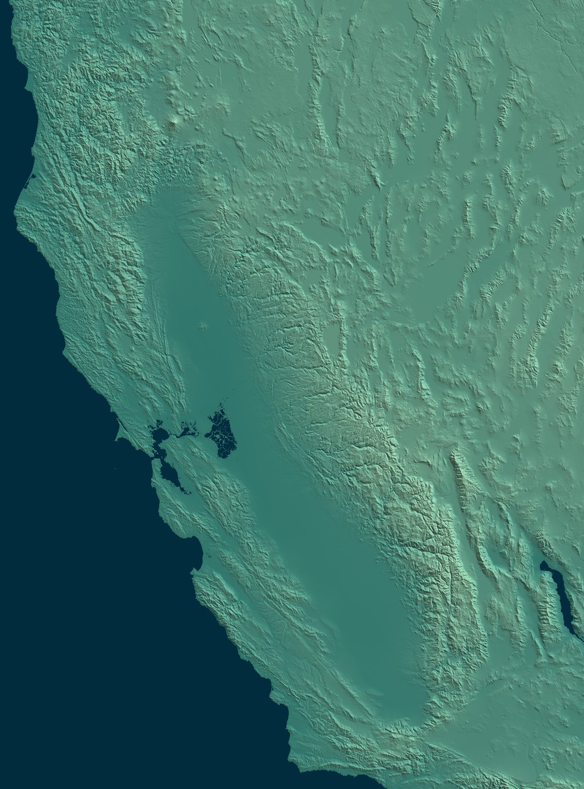
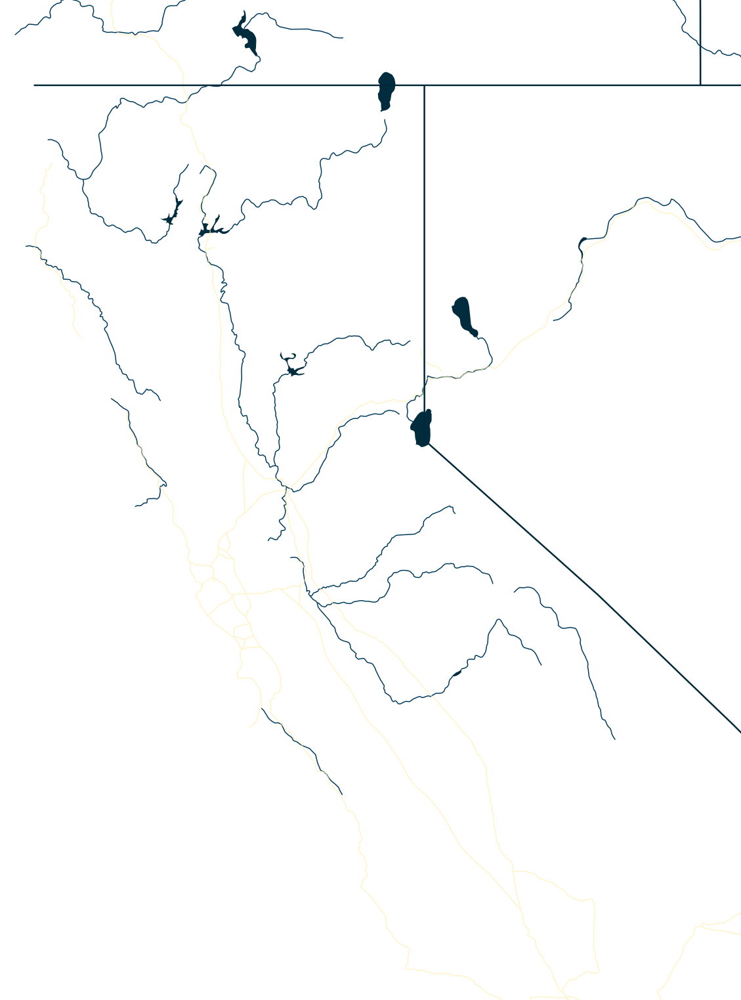
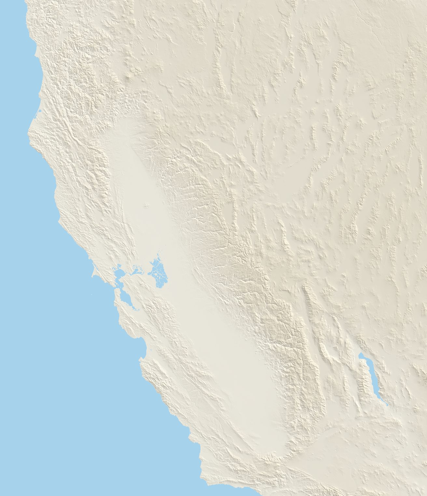
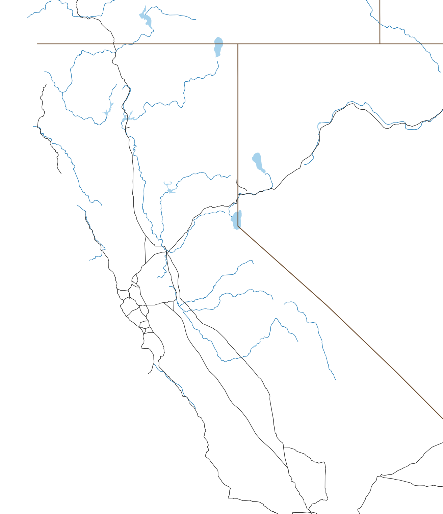

Black Mountain W6/NC-386
Summit
- Summit
- W6/NC-386 · Peakbagger
- Points
- 1
- First activation
- AJ6X, 2 May 2026
- Elevation
- 1,280′ (390 m)
- Prominence
- 726′ (221 m)
- Isolation
- 3.7 mi (5.9 km)
- Region
- Northern Coastal Ranges
- County
- Marin, California
- Grid
- CM88ob
- Land
- Private
- Wilderness
- None
- POTA park
- None
Route and radio
- Trailhead
- Black Mountain Ranch, 50′ (15 m)
- Access
- Paved road
- Red tape
- Private ranch, only on MALT events; free, $30 donation suggested
- Round trip
- 6.2 mi (10.0 km), 3.5 h
- Elevation gain
- 1,480′ (451 m)
- Transport
- Hiking, Class 1
- Cell service
- Top: T-Mobile good · way up: from 1,300′
- Towers, power lines
- power line 800 m SW
RF nearby: 751 licensed stations within 30 km
What to bring, the cheapest radio that still works here, on the AJ6X RF scale: HF: rung 1 of 4, uSDX or QMX, about $150: anything works. VHF: rung 1 of 4, Baofeng, about $25: anything works.
| Station | Service | Frequency | ERP | Where | Terrain | dBµV/m |
|---|---|---|---|---|---|---|
| KCBS | AM radio | 740 kHz | 50 kW | 21.6 km E | −7 dB | 93 |
| WQNE547 | business radio | 152.382 MHz | 75 W | 1.7 km SE | in sight | 91 |
| WNGM656 | business radio | 462.8 MHz | 2.8 kW | 14.4 km E | in sight | 88 |
| KXH289 | public safety | 462.9–463.2 MHz | 600 W | 7.4 km SE | in sight | 87 |
| KCZ438 | business radio | 158.265 MHz | 180 W | 4.7 km SW | in sight | 86 |
| KML964 | public safety | 46.12–46.5 MHz | 144 W | 4.0 km W | in sight | 85 |
| KML958 | public safety | 46.12–46.28 MHz | 300 W | 7.4 km SE | in sight | 84 |
| KMA224 | public safety | 39.24 MHz | 300 W | 7.4 km SE | in sight | 84 |
| WNGM656 | business radio | 462.8 MHz | 2.8 kW | 23.0 km SE | in sight | 84 |
| KNKJ371 | paging | 931.163 MHz | 1.09 kW | 14.4 km E | in sight | 84 |
| WPHY735 | public safety | 151–156.2 MHz | 260 W | 7.4 km SE | in sight | 84 |
| WPPV514 | public safety | 489.913 MHz | 1 kW | 14.4 km E | in sight | 84 |
Field strength at the summit from each station's power and distance, less an estimate of the terrain in between. A rough guide, by a rung either way: antenna patterns aren't known, and the noise from a site's equipment is in no licence. Data: FCC licences (2026-10-24), NOAA Weather Radio, OpenStreetMap.
Further down: Map · Aerial photo · QSO map · Summit to summit · Log
Black Mountain rises right above Point Reyes Station in West Marin, between the town and Nicasio Reservoir. It’s also known as Elephant Mountain. It’s all private ranch land: grassy slopes, cattle and sheep, and great views over the reservoir. It’s been a SOTA summit since 2012, but nobody had ever activated it.
My friend Tony KM6AM told me about the Marin Agricultural Land Trust (MALT), which organizes open days on private Marin ranches. We talked about activating Black Mountain on a 2025 hike, but it fell through because of competing kids’ activities. This time I found out about the Day on the Ranch event just a few days before it was scheduled. With spots still available, I signed up and asked Tony if he could join. He had something else to do that day. In fact, so did I: I was volunteering for the weekend at the Henry E. Bothin Youth Camp, and I didn’t know yet if I could actually make it.
Later that year, another MALT hike took me to Hicks Mountain, just across Nicasio Reservoir.
The ranch
The ranch is about 1,200 acres on the west side of the mountain, from the edge of town down to the floodplain of Lagunitas Creek. Both the ranch and the mountain are named after James “Santiago” Black, who made a fortune ranching cattle during the Gold Rush. At one point he was the biggest property taxpayer in Marin, and he was also mayor of San Rafael, a judge and the county coroner. (Black Mountain Ranch)
MALT bought the development rights in 1993, so the ranch stays agricultural and can never be subdivided. In 2021 it changed hands for only the third time since the Mexican land grant: Marcel Houtzager, a money manager from Ross, bought it from Dave Osborn for $8.8 million. He’s not a rancher himself, and he calls MALT a co-owner. (Point Reyes Light)
Today the ranch hosts many small operations. Stemple Creek Ranch (Loren and Lisa Poncia) grazes about 140 Black Angus beef cattle, Three Bags Full keeps about 60 Jacob sheep for wool, The Farm grows flowers and vegetables, Fibershed works on local fiber and dye plants, and Point Reyes Lavender grows, well, lavender. Little Wing Farm grew vegetables and flowers for its farm stand by the road, but it appears to have closed. The three-story barn by Point Reyes–Petaluma Road has been renovated, too. (Black Mountain Ranch, MALT)
Getting there
The ranch is open only for organized events. MALT’s Day on the Ranch was on Saturday, 2 May 2026, from 1 to 4 PM: live music, picnics, local cheese and soft serve, food and wool from the ranch’s farmers, and hikes. It’s free, with a suggested $30 donation. MALT also holds hikes here in the fall (the latest on 24 October 2026): six miles round trip and about 1,200′ of climbing to the top, steep in places and exposed to sun, wind or rain, or a shorter walk and a picnic. My GPS says 6.2 miles and 1,480′, the whole hike. The ranch also runs its own tours, hikes and workshops.
- When: whenever MALT organizes the next hike.
- Water: none on the trail.
- Time: the event ran from 1 to 4 PM. That was enough time to set up properly, operate for about half an hour, and pack away.
- Sun: none that day: nice and cool weather for hiking. I think it might get very hot in the summer, and there’s no shade.
- Fog and wind: on this day it was cool and cloudy, perfect for a quick hike. On a sunny day, one Peakbagger trip report estimated sustained winds of 30 mph or more near the top, so bring a layer.
- Dogs and smoking: no dogs other than service animals, and no smoking: these are working ranches. (MALT’s event policies)
- Toilets: portable toilets at the trailhead.
- Ticks: it was wet, and parts of the trail were overgrown. I kept checking, but found none out there. The only one we saw all day was in the car on the way down, crawling on a fellow hiker’s leg.
- Cell: Verizon worked on much of the hike; not sure about the trailhead.
Trailhead
On the day of the hike I was able to sign up for the morning and evening shifts at the Bothin Camp, leaving a window just big enough for the Black Mountain hike. So I jumped in the car and drove the 15 miles, about half an hour, to Black Mountain.
I arrived exactly on time, and got the last parking spot on the side of the main road; cars arriving after me were sent to an overflow parking lot. I guess getting there 10–15 minutes early is a solid plan.
This was a Day on the Ranch, with plenty of activities. They looked like great fun, and I plan to return for a next event, with the kids. But that day I had a different plan. So I checked in, then quickly headed up the mountain.
The way up
My GPS says about 3 miles and 1,400′ of climbing to the top. On this hike the MALT staff and volunteers were relaxed, with visitors hiking both ahead of and behind the guides. Thanks to the cool, cloudy weather, I could make good time on the way up.
The hike started on a nice ranch road, going up at a good slope: not too steep, not too flat.

The route loops away from the mountain, steadily gaining elevation towards the ridge.


At some point the ranch road became much less traveled, and overgrown with grass. Every five minutes or so I stopped to check myself for ticks, but luckily I didn’t spot any.


Soon after, the very steep climb to the summit started.

A passenger car caught up to me on the incredibly steep road. I couldn’t believe an ordinary city Subaru had enough traction to make the climb.
Summit
Then the slope started to level off, and I made it to the false summit, which has a radio tower farm. The car was parked there: it turned out to be someone servicing the towers.


I kept walking briskly to the summit.
The views from the top reach the peaks of the Point Reyes peninsula. It was cloudy for me, but on a clear day you can see Mount Saint Helena to the northeast, and as far as Mount Diablo to the south (from a Peakbagger trip report).
Here I took pictures of the summit and my antenna mast.

Activation
2 May 2026 First activation
- Radio
- Elecraft KX2
- Antenna
- 40m EFHW
- Antenna support
- Carbon fiber mast, guyed with 3 ground spikes
- Power
- 5 W
- RFI
- Low
- Activator
- AJ6X
- QSOs
- 11
- Bands
- 40m (8), 15m (3)
- Modes
- CW (11)
- On air
- 21:48–22:16 UTC
First activation of Black Mountain! This time I had time to set up properly, operate for about half an hour, and pack away. I started on 40m CW with the usual chasers, Tony KM6AM among them: 8 contacts in 16 minutes (21:48 to 22:04 UTC). Throughout the activation, curious visitors stopped by to find out what I was doing.
Despite the communications site on the false summit nearby, the RFI was low. After the 40m contacts, I switched to 15m for some DX, and quickly got the ubiquitous French station, Christian F4WBN, and two of the usual Japanese stations, Kaz 7N1FRE and Take JS2TNW. 15m was wide open into Japan, and there was a good pileup of Japanese stations going by now, but I was running out of time, and I was the only person left on the summit. So I abruptly sent QRT, packed up and left.
A reminder: keep an eye on the clock, and on the summit emptying out. On an event hike, the hikers heading down are the signal to wrap up, pileup or not.
And back
Soon I caught up with Mark KN6KZH from San Rafael, who was also on the hike but didn’t bring a radio along. We had a nice long chat on the way down, about amateur radio, SOTA, RACES, and so on. Back on the ridge, a member of the MALT staff offered us a ride, so the way down was much faster than expected. In the car, we saw the only tick of the whole day, crawling on Mark’s leg.
Back at the trailhead the party was over, so I got into the car and drove back to the Bothin camp for my evening shift.

Map


Cell service, 4G, from the carriers' maps: good fair weak
Aerial photo


QSO map


Azimuthal equidistant, log (linear inside 10 km) distance scale, out to 10,301 km, centred on the summit: every QSO is a straight line, true in direction. Chasers at their location on QRZ, to about 5 km; summit-to-summit contacts at the other summit. Rings: what the skimmers of the Reverse Beacon Network heard of our calls during the activations, each skimmer at the centre of its grid square. Earth: NASA Blue Marble.
Summit to summit on 2 m
1,350 activated summits in reach of Black Mountain on 2 m at 5 W, most activated first.
- Two rubber duckies, FM: 125. Mount Davidson W6/NC-423, Vollmer Peak W6/NC-298, Mount Diablo W6/CC-045, San Bruno Mountain W6/CC-072
- Two half-waves, FM: 136. Big Hill W6/NS-290, Grouse Ridge W6/NS-195, Robbs Peak W6/NS-266, Willson Peak W6/NC-182
- Yagis help, CW: 575. Donner Ridge W6/NS-181, Coyote Peak W6/NC-399, Leviathan Peak W6/SN-039, Mount Watson W6/NS-147
- Long shots with two yagis, CW, half of the time: 272. Lookout Mountain W6/ND-037, Gold Star Peak W6/NS-189, Dry Creek Knoll W6/ND-392, Tahoe Mountain W6/NS-397
- Very long shots with two yagis, CW, a tenth of the time: 242. Mount Pinos W6/CC-002, Cerro Noroeste W6/SC-001, Frazier Mountain W6/CC-003, San Emigdio Mountain W6/SC-002




▲ Black Mountain
- Two rubber duckies, FM: 125. Mount Davidson W6/NC-423, Vollmer Peak W6/NC-298, Mount Diablo W6/CC-045, San Bruno Mountain W6/CC-072
- Two half-waves, FM: 136. Big Hill W6/NS-290, Grouse Ridge W6/NS-195, Robbs Peak W6/NS-266, Willson Peak W6/NC-182
- Yagis help, CW: 575. Donner Ridge W6/NS-181, Coyote Peak W6/NC-399, Leviathan Peak W6/SN-039, Mount Watson W6/NS-147
- Long shots with two yagis, CW, half of the time: 272. Lookout Mountain W6/ND-037, Gold Star Peak W6/NS-189, Dry Creek Knoll W6/ND-392, Tahoe Mountain W6/NS-397
- Very long shots with two yagis, CW, a tenth of the time: 242. Mount Pinos W6/CC-002, Cerro Noroeste W6/SC-001, Frazier Mountain W6/CC-003, San Emigdio Mountain W6/SC-002
Calculated, not measured, with NTIA's Irregular Terrain Model (ITM, Longley-Rice) point to point over each path's profile: 146 MHz, continental temperate climate, average ground. 5 W, antennas 6.5′ (2 m) up and aimed, RFI left out. A rough guide. Each group is the easiest setup that works 90% of the time. FM needs −119.5 dBm at the receiver (12 dB SINAD), with rubber duckies at about −5.4 dBi each (−3 to −8), upright in the hand and facing the other summit, and half-waves at 2.15; both must still work under a 65′ (20 m) canopy along the path, clear of the tops. Yagis: CW at 0 dB over noise in 500 Hz. Long shots work half of the time, very long shots a tenth, with two yagis. Terrain from USGS 3DEP at 30 m, summits from the SOTA list, rivers, freeways and state lines from Natural Earth.
The path to 20 of them
The ground as a radio sees it, the earth's curve included, from Black Mountain on the left. Heights are stretched a lot.
All 1,350
In dB, 90% of the time; 0 or more works. Rubber duckies and two half-waves: margin over a working FM signal, under the canopy. With yagis: CW signal over noise in 500 Hz, half-wave and yagi vertical, two yagis horizontal.
| Summit | Activations | mi | What works | Rubber duckies, FM | Two half-waves, FM | Half-wave, yagi, CW | Two yagis, CW | |
|---|---|---|---|---|---|---|---|---|
| W6/NC-423 Mount Davidson | 925 | 29 | SE | Rubber duckies | 13 | 29 | 54 | 59 |
| W6/NC-298 Vollmer Peak | 638 | 33 | ESE | Rubber duckies | 24 | 39 | 64 | 69 |
| W6/CC-045 Mount Diablo | 275 | 48 | ESE | Rubber duckies | 31 | 46 | 71 | 75 |
| W6/CC-002 Mount Pinos | 256 | 302 | SE | Very long shot | −59 | −44 | −19 | −14 |
| W6/SC-001 Cerro Noroeste | 248 | 299 | SE | Very long shot | −58 | −42 | −17 | −13 |
| W6/CC-003 Frazier Mountain | 218 | 311 | SE | Very long shot | −59 | −44 | −19 | −14 |
| W6/CC-072 San Bruno Mountain | 215 | 33 | SSE | Rubber duckies | 14 | 29 | 55 | 60 |
| W6/NS-290 Big Hill | 185 | 138 | ENE | Half-waves | −9 | 6 | 32 | 37 |
| W6/NC-150 Black Mountain | 184 | 63 | SSE | Rubber duckies | 9 | 24 | 50 | 54 |
| W6/CC-052 Mount Umunhum | 180 | 79 | SE | Rubber duckies | 1 | 16 | 41 | 46 |
| W6/NC-191 El Sereno | 167 | 72 | SE | Rubber duckies | 1 | 16 | 42 | 46 |
| W6/CC-063 Mount Tamalpais | 161 | 14 | SE | Rubber duckies | 43 | 58 | 82 | 87 |
| W6/NS-181 Donner Ridge | 157 | 160 | NE | Yagis | −33 | −18 | 7 | 12 |
| W6/NC-432 Chabot 2 Benchmark | 151 | 43 | SE | Rubber duckies | 23 | 38 | 72 | 76 |
| W6/NC-209 Sierra Morena | 149 | 53 | SSE | Rubber duckies | 12 | 27 | 53 | 57 |
| W6/ND-037 Lookout Mountain | 147 | 210 | E | Long shot | −54 | −39 | −13 | −9 |
| W6/NC-399 Coyote Peak | 145 | 81 | SE | Yagis | −15 | 0 | 27 | 32 |
| W6/SC-002 San Emigdio Mountain | 143 | 298 | SE | Very long shot | −59 | −44 | −19 | −15 |
| W6/SN-039 Leviathan Peak | 126 | 176 | ENE | Yagis | −29 | −14 | 13 | 17 |
| W6/NS-189 Gold Star Peak | 125 | 166 | ENE | Long shot | −49 | −34 | −7 | −3 |
| W6/ND-392 Dry Creek Knoll | 118 | 208 | E | Long shot | −51 | −35 | −9 | −5 |
| W6/NS-147 Mount Watson | 114 | 162 | ENE | Yagis | −29 | −14 | 12 | 16 |
| W6/SC-155 Mount Bielawski | 110 | 70 | SSE | Rubber duckies | 7 | 22 | 48 | 52 |
| W6/CC-051 North Peak | 105 | 49 | ESE | Rubber duckies | 31 | 46 | 71 | 75 |
| W6/NS-195 Grouse Ridge | 103 | 147 | NE | Half-waves | −5 | 10 | 36 | 40 |
| W6/NC-407 Richardson East Benchmark | 100 | 22 | SE | Rubber duckies | 13 | 28 | 54 | 58 |
| W6/NS-306 Lowell Hill Ridge | 93 | 141 | NE | Yagis | −30 | −15 | 31 | 35 |
| W6/NS-397 Tahoe Mountain | 93 | 158 | ENE | Long shot | −52 | −37 | −11 | −7 |
| W6/ND-012 Bald Mountain | 92 | 212 | E | Long shot | −53 | −38 | −12 | −8 |
| W6/NS-248 7008 | 91 | 159 | ENE | Long shot | −53 | −38 | −12 | −8 |
| W6/NC-371 Briones Hills | 90 | 36 | ESE | Rubber duckies | 23 | 38 | 64 | 69 |
| W6/NS-138 Mount Pluto | 89 | 163 | ENE | Yagis | −31 | −16 | 10 | 15 |
| W7N/TR-027 Captain Pomin Rock | 89 | 169 | ENE | Yagis | −35 | −20 | 6 | 10 |
| W6/NC-268 Rocky Ridge | 88 | 43 | ESE | Rubber duckies | 17 | 32 | 58 | 63 |
| W6/NS-266 Robbs Peak | 88 | 140 | ENE | Half-waves | −11 | 4 | 30 | 35 |
| W7O/CS-019 Mount Ashland | 88 | 276 | N | Very long shot | −58 | −43 | −18 | −14 |
| W7N/WC-011 Peavine Peak | 86 | 185 | NE | Yagis | −43 | −28 | −2 | 2 |
| W7N/WC-003 Tamarack Peak | 85 | 176 | ENE | Yagis | −37 | −22 | 7 | 12 |
| W6/SN-033 Mammoth Mountain | 83 | 206 | E | Yagis | −41 | −26 | −1 | 4 |
| W7O/CE-051 Hamaker Mountain | 79 | 279 | N | Very long shot | −58 | −43 | −18 | −13 |
| W6/CC-075 Mount Caroline Livermore | 78 | 24 | SE | Rubber duckies | 26 | 41 | 67 | 71 |
| W6/NC-516 Maguire Peaks | 77 | 63 | SE | Rubber duckies | 10 | 25 | 51 | 56 |
| W6/CC-071 Point Reyes Hill | 76 | 6 | W | Rubber duckies | 51 | 66 | 91 | 95 |
| W6/NS-204 KU6J Memorial Peak - 7559 | 76 | 153 | NE | Yagis | −29 | −14 | 11 | 16 |
| W6/WH-008 10940 | 76 | 253 | E | Long shot | −49 | −34 | −9 | −4 |
| W7O/CS-030 McDonald Peak | 73 | 277 | N | Very long shot | −59 | −44 | −19 | −15 |
| W6/NC-151 Mount Vaca | 70 | 42 | ENE | Rubber duckies | 32 | 48 | 72 | 77 |
| W7N/WC-004 Slide Mountain | 69 | 177 | ENE | Yagis | −32 | −17 | 9 | 13 |
| W6/SC-005 Escapula Peak | 68 | 302 | SE | Very long shot | −59 | −44 | −19 | −14 |
| W6/NC-338 Brushy Peak | 67 | 62 | ESE | Rubber duckies | 7 | 22 | 51 | 55 |
| W6/CC-062 Santa Rosalia Mountain | 64 | 86 | SE | Yagis | −20 | −5 | 20 | 24 |
| W6/ND-041 8126 | 64 | 214 | E | Very long shot | −54 | −39 | −13 | −9 |
| W6/NC-182 Willson Peak | 63 | 100 | SE | Half-waves | −14 | 1 | 29 | 33 |
| W6/NC-353 Burdell Mountain | 62 | 10 | ENE | Rubber duckies | 45 | 60 | 85 | 90 |
| W6/CC-055 Fremont Peak | 61 | 115 | SE | Yagis | −28 | −13 | 12 | 17 |
| W6/NC-180 Mount Allison | 60 | 63 | SE | Rubber duckies | 14 | 29 | 54 | 58 |
| W6/NS-177 7860 | 59 | 161 | NE | Yagis | −37 | −22 | 4 | 8 |
| W6/NS-236 Prosser Hill | 58 | 164 | NE | Yagis | −45 | −30 | −4 | 1 |
| W6/WH-009 10660 | 58 | 255 | E | Long shot | −50 | −35 | −10 | −5 |
| W6/NS-393 7751 | 57 | 157 | NE | Yagis | −33 | −18 | 9 | 13 |
| W6/NS-264 Boca Hill | 57 | 169 | ENE | Long shot | −47 | −32 | −6 | −1 |
| W7N/WC-111 Rattlesnake Mountain | 57 | 188 | ENE | Very long shot | −64 | −49 | −23 | −19 |
| W6/NS-269 6622 | 56 | 167 | ENE | Long shot | −57 | −42 | −13 | −8 |
| W6/NC-435 Tiburon Peninsula | 55 | 21 | SE | Rubber duckies | 24 | 39 | 65 | 70 |
| W6/NC-398 1180 | 54 | 40 | ESE | Rubber duckies | 11 | 26 | 53 | 58 |
| W6/NC-244 Sunol Peak | 53 | 56 | SE | Rubber duckies | 29 | 44 | 69 | 74 |
| W6/NC-542 Point Reyes | 52 | 15 | WSW | Rubber duckies | 42 | 57 | 82 | 87 |
| W6/NC-030 Mount Saint Helena | 51 | 41 | N | Rubber duckies | 33 | 48 | 73 | 77 |
| W6/NC-178 Ben Lomond Mountain | 51 | 73 | SSE | Half-waves | −1 | 15 | 41 | 46 |
| W6/ND-026 Gilbert Peak | 50 | 212 | E | Long shot | −53 | −38 | −13 | −8 |
| W6/NC-350 Loma Alta | 49 | 9 | ESE | Rubber duckies | 46 | 62 | 86 | 91 |
| W6/NC-410 San Pedro Mountain | 49 | 16 | ESE | Rubber duckies | 31 | 46 | 72 | 76 |
| W6/SC-378 Black Hill | 49 | 216 | SSE | Very long shot | −54 | −39 | −13 | −9 |
| W7O/CS-075 Soda Mountain | 49 | 276 | N | Very long shot | −59 | −44 | −19 | −15 |
| W6/NC-379 Taylor Mountain | 47 | 23 | NNE | Rubber duckies | 38 | 53 | 78 | 83 |
| W6/NS-160 Sardine Peak | 47 | 172 | NE | Yagis | −41 | −26 | 0 | 4 |
| W7N/WC-005 Chickadee Ridge | 47 | 176 | ENE | Yagis | −32 | −17 | 7 | 12 |
| W6/NC-190 Marsh Benchmark | 46 | 55 | ESE | Rubber duckies | 29 | 44 | 69 | 74 |
| W6/SC-458 Loma Alta | 46 | 116 | SSE | Yagis | −24 | −9 | 18 | 22 |
| W6/NC-378 Mount Wittenberg | 45 | 4 | SW | Rubber duckies | 53 | 68 | 93 | 98 |
| W6/NS-179 Signal Peak | 45 | 148 | NE | Half-waves | −7 | 8 | 33 | 37 |
| W6/NC-417 Abrott Benchmark | 44 | 29 | ESE | Rubber duckies | 28 | 43 | 75 | 80 |
| W6/NC-029 Copernicus Peak | 43 | 80 | SE | Rubber duckies | 11 | 26 | 52 | 57 |
| W6/NC-367 1502 | 43 | 93 | SE | Yagis | −20 | −5 | 22 | 26 |
| W6/ND-393 8185 | 43 | 230 | E | Very long shot | −56 | −41 | −15 | −11 |
| W6/SN-047 Bald Mountain | 42 | 125 | ENE | Half-waves | −10 | 5 | 31 | 35 |
| W6/NS-296 Clyde Mountain | 42 | 143 | NE | Half-waves | −9 | 6 | 31 | 36 |
| W6/NS-149 Mount Lincoln | 42 | 156 | ENE | Half-waves | −11 | 4 | 29 | 34 |
| W6/WH-007 Clem Nelson Peak | 42 | 255 | E | Long shot | −50 | −35 | −10 | −5 |
| W7O/CS-021 Dutchman Peak | 42 | 274 | N | Very long shot | −58 | −43 | −18 | −14 |
| W6/NS-135 South Maggies Peaks | 41 | 155 | ENE | Yagis | −43 | −28 | −1 | 3 |
| W6/SN-038 Castle Peak | 41 | 158 | NE | Half-waves | −10 | 5 | 30 | 35 |
| W6/NS-210 Colorado Hill | 41 | 170 | ENE | Yagis | −37 | −22 | 4 | 8 |
| W7N/WC-002 Houghton, Mount | 41 | 175 | ENE | Yagis | −30 | −15 | 10 | 15 |
| W6/NC-221 China Grade Benchmark | 40 | 67 | SSE | Rubber duckies | 3 | 18 | 45 | 49 |
| W6/NS-156 Lacey Benchmark | 40 | 156 | NE | Yagis | −23 | −8 | 17 | 21 |
| W7N/WC-001 Rose, Mount | 40 | 177 | ENE | Yagis | −30 | −15 | 10 | 14 |
| W6/NC-434 Bay Hill | 38 | 23 | NW | Rubber duckies | 38 | 53 | 78 | 82 |
| W6/ND-387 Gaylor Peak | 38 | 191 | E | Yagis | −28 | −13 | 17 | 21 |
| W6/ND-029 Banner Ridge | 38 | 230 | E | Long shot | −51 | −36 | −11 | −6 |
| W6/NC-400 Bald Hill | 37 | 13 | SE | Rubber duckies | 32 | 47 | 73 | 78 |
| W6/NS-132 Babbitt Peak | 37 | 178 | NE | Yagis | −36 | −21 | 5 | 9 |
| W6/CC-060 Bald Mountain | 36 | 30 | NNE | Rubber duckies | 25 | 40 | 66 | 70 |
| W6/NC-406 Sulphur Springs Mountain | 36 | 32 | E | Rubber duckies | 25 | 40 | 66 | 71 |
| W6/CV-017 968 | 36 | 45 | ENE | Rubber duckies | 10 | 25 | 51 | 56 |
| W6/NS-392 7779 | 36 | 172 | ENE | Yagis | −32 | −17 | 9 | 14 |
| W7O/CS-034 Big Red Mountain | 36 | 274 | N | Very long shot | −59 | −44 | −19 | −14 |
| W6/NC-331 Pine Mountain | 35 | 9 | SE | Rubber duckies | 46 | 61 | 86 | 91 |
| W6/NC-323 Black Point | 35 | 45 | ESE | Rubber duckies | 18 | 33 | 60 | 64 |
| W6/SC-213 Hawkins Peak | 35 | 140 | SE | Yagis | −42 | −27 | −1 | 3 |
| W6/NS-139 North Sierra Buttes | 35 | 155 | NE | Half-waves | −9 | 6 | 31 | 35 |
| W6/SS-285 Bald Mountain | 34 | 287 | ESE | Very long shot | −55 | −40 | −14 | −10 |
| W6/CN-002 Lassen Peak | 33 | 179 | NNE | Yagis | −16 | −1 | 24 | 29 |
| W6/SN-001 Mount Whitney | 33 | 267 | ESE | Yagis | −42 | −27 | −2 | 2 |
| W6/CC-035 Mount Konocti | 32 | 62 | N | Rubber duckies | 12 | 27 | 53 | 58 |
| W6/SN-048 Banner Mountain | 32 | 126 | NE | Half-waves | −9 | 6 | 32 | 36 |
| W6/NS-162 Haskell Peak | 32 | 162 | NE | Yagis | −37 | −22 | 4 | 8 |
| W7N/TR-007 Genoa Peak | 32 | 169 | ENE | Yagis | −32 | −17 | 9 | 13 |
| W6/NS-017 Tioga Peak | 32 | 192 | E | Yagis | −36 | −21 | 5 | 10 |
| W6/SC-377 Valley View Benchmark | 32 | 230 | SSE | Very long shot | −54 | −39 | −12 | −8 |
| W6/SC-149 North Chalone Peak | 31 | 142 | SE | Yagis | −34 | −19 | 7 | 12 |
| W6/NS-193 Sagehen Hills | 31 | 163 | NE | Long shot | −46 | −31 | −5 | −1 |
| W6/SN-032 Sonora Peak | 31 | 171 | E | Half-waves | −7 | 8 | 34 | 39 |
| W7N/WC-028 Scott, Mount | 31 | 184 | ENE | Yagis | −43 | −27 | −2 | 3 |
| W7O/CS-058 Old Baldy | 31 | 289 | N | Very long shot | −58 | −43 | −18 | −14 |
| W6/NC-174 Wasno Ridge | 30 | 98 | SE | Yagis | −18 | −3 | 24 | 28 |
| W6/WH-004 Campito Mountain | 30 | 252 | E | Long shot | −47 | −32 | −7 | −3 |
| W6/WH-006 County Line Hill | 30 | 254 | E | Long shot | −48 | −33 | −8 | −3 |
| W6/IN-015 Tollhouse Benchmark | 30 | 258 | ESE | Very long shot | −55 | −40 | −15 | −10 |
| W6/NC-387 1272 | 29 | 58 | ESE | Yagis | −15 | 0 | 26 | 31 |
| W6/NS-223 Pinoli Ridge | 29 | 151 | NE | Yagis | −30 | −15 | 17 | 22 |
| W6/NS-108 Ralston Peak | 29 | 153 | ENE | Half-waves | −2 | 13 | 40 | 45 |
| W6/NS-062 Red Lake Peak | 29 | 157 | ENE | Rubber duckies | 5 | 20 | 50 | 54 |
| W6/NS-228 Beckwourth Peak | 29 | 171 | NE | Yagis | −39 | −24 | 2 | 6 |
| W7N/WC-010 Virginia Peak | 29 | 212 | NE | Long shot | −47 | −32 | −7 | −2 |
| W6/NS-159 8166 | 28 | 156 | NE | Yagis | −24 | −9 | 16 | 20 |
| W6/NS-092 Waterhouse Peak | 28 | 159 | ENE | Yagis | −24 | −9 | 16 | 20 |
| W7N/TR-065 Wild Oat Mountain | 28 | 180 | ENE | Very long shot | −62 | −47 | −21 | −17 |
| W6/ND-009 Masonic Mountain | 28 | 198 | E | Yagis | −43 | −28 | −2 | 2 |
| W6/SS-306 Deer Mountain | 28 | 206 | E | Very long shot | −58 | −43 | −18 | −13 |
| W7N/TR-025 Davidson, Mount | 27 | 188 | ENE | Yagis | −37 | −22 | 4 | 8 |
| W7N/WC-064 6607 | 27 | 192 | NE | Long shot | −52 | −37 | −10 | −6 |
| W6/SC-353 Valencia Peak | 27 | 221 | SSE | Long shot | −51 | −36 | −11 | −7 |
| W6/SS-334 Big Baldy | 27 | 234 | ESE | Yagis | −30 | −15 | 10 | 15 |
| W6/CD-005 Mazourka Peak | 27 | 266 | ESE | Very long shot | −62 | −46 | −21 | −17 |
| W6/CC-036 Santa Ynez Peak | 27 | 290 | SSE | Very long shot | −58 | −43 | −17 | −13 |
| W6/NC-422 990 | 26 | 31 | ENE | Rubber duckies | 24 | 39 | 65 | 69 |
| W6/NS-422 Quick Benchmark | 26 | 118 | NE | Half-waves | −12 | 3 | 28 | 32 |
| W6/SN-046 Little Bald Mountain | 26 | 142 | ENE | Half-waves | −10 | 5 | 31 | 35 |
| W6/NS-153 Scott Peak | 26 | 156 | ENE | Yagis | −42 | −27 | −3 | 2 |
| W6/NS-203 7605 | 26 | 163 | NE | Yagis | −30 | −15 | 13 | 17 |
| W6/NS-065 Hawkins Peak | 26 | 163 | ENE | Yagis | −21 | −6 | 21 | 25 |
| W6/NS-146 Verdi Peak | 26 | 176 | NE | Yagis | −34 | −19 | 7 | 11 |
| W6/SN-020 Mount Dana | 26 | 193 | E | Half-waves | −9 | 6 | 33 | 37 |
| W6/SS-284 Earthquake Dome | 26 | 207 | E | Very long shot | −55 | −40 | −14 | −10 |
| W6/NC-304 Big Rock Ridge | 25 | 9 | E | Rubber duckies | 47 | 62 | 86 | 91 |
| W6/NC-419 Fitch Mountain | 25 | 37 | N | Rubber duckies | 23 | 38 | 65 | 69 |
| W6/NS-055 Round Top | 25 | 155 | ENE | Rubber duckies | 12 | 27 | 52 | 56 |
| W6/NS-213 Schallenberger Ridge | 25 | 159 | ENE | Yagis | −42 | −27 | 0 | 4 |
| W6/NS-169 Land Peak | 25 | 172 | NE | Yagis | −39 | −24 | 1 | 6 |
| W6/CN-006 Dixie Mountain | 25 | 185 | NE | Yagis | −36 | −21 | 4 | 9 |
| W6/ND-378 Sheep Mountain | 25 | 251 | E | Long shot | −46 | −31 | −6 | −1 |
| W6/CC-028 Figueroa Mountain | 25 | 278 | SE | Very long shot | −55 | −40 | −15 | −10 |
| W6/NC-430 Little Mountain | 24 | 8 | ENE | Rubber duckies | 38 | 53 | 80 | 84 |
| W6/NS-420 Colfax Hill | 24 | 121 | NE | Half-waves | −13 | 2 | 28 | 33 |
| W6/SN-036 Mount Tallac | 24 | 155 | ENE | Yagis | −29 | −14 | 14 | 18 |
| W6/NS-121 Tinker Knob | 24 | 156 | ENE | Half-waves | −10 | 5 | 30 | 34 |
| W6/NS-198 Smith Peak | 24 | 172 | NE | Yagis | −33 | −18 | 8 | 12 |
| W6/CN-005 Mount Ingalls | 24 | 175 | NE | Yagis | −34 | −19 | 6 | 11 |
| W6/SS-313 Indian Rock | 24 | 176 | E | Yagis | −36 | −21 | 5 | 10 |
| W7O/CS-027 Wagner Butte | 24 | 279 | N | Very long shot | −59 | −43 | −19 | −14 |
| W6/NC-019 High Glade Benchmark | 23 | 78 | N | Rubber duckies | 7 | 22 | 47 | 52 |
| W6/SC-153 South Chalone Peak | 23 | 143 | SE | Yagis | −39 | −24 | 8 | 12 |
| W6/NC-037 Elk Mountain | 22 | 84 | N | Rubber duckies | 4 | 19 | 44 | 49 |
| W6/NC-023 Horse Mountain | 22 | 85 | N | Rubber duckies | 9 | 24 | 49 | 54 |
| W6/CC-010 Anthony Peak | 22 | 122 | N | Yagis | −22 | −7 | 19 | 23 |
| W6/SN-049 Slate Mountain | 22 | 124 | ENE | Half-waves | −12 | 3 | 29 | 33 |
| W6/NS-087 Little Round Top | 22 | 154 | ENE | Rubber duckies | 5 | 20 | 51 | 55 |
| W6/NS-155 Sand Ridge | 22 | 155 | NE | Half-waves | −10 | 5 | 30 | 35 |
| W6/NS-163 Webber Peak | 22 | 158 | NE | Yagis | −26 | −11 | 18 | 22 |
| W6/NS-207 Crocker Mountain | 22 | 177 | NE | Yagis | −38 | −23 | 2 | 7 |
| W7N/TR-005 Bald Mountain | 22 | 183 | ENE | Yagis | −29 | −14 | 13 | 18 |
| W6/NS-233 Black Mountain | 22 | 193 | NE | Long shot | −46 | −31 | −6 | −1 |
| W6/ND-047 Casa Diablo Mountain | 22 | 233 | E | Very long shot | −54 | −39 | −13 | −9 |
| W6/NS-395 7569 | 21 | 156 | NE | Half-waves | −12 | 3 | 29 | 33 |
| W7N/TR-014 Duane Bliss Peak | 21 | 171 | ENE | Yagis | −33 | −18 | 7 | 12 |
| W7N/WC-014 Pond Peak | 21 | 208 | ENE | Long shot | −49 | −34 | −9 | −4 |
| W6/SC-056 Ranger Peak | 21 | 280 | SE | Very long shot | −56 | −41 | −15 | −11 |
| W6/CC-070 Barnabe Mountain | 20 | 5 | SE | Rubber duckies | 53 | 68 | 92 | 97 |
| W6/NC-165 Mount Hood | 20 | 29 | NNE | Rubber duckies | 36 | 51 | 76 | 81 |
| W6/NC-499 Windy Point | 20 | 51 | ESE | Rubber duckies | 2 | 17 | 43 | 48 |
| W6/NS-133 Ellis Peak | 20 | 155 | ENE | Half-waves | −12 | 4 | 30 | 34 |
| W6/NS-375 Stevens Peak | 20 | 157 | ENE | Rubber duckies | 5 | 20 | 50 | 54 |
| W6/NS-382 Pickett Peak | 20 | 162 | ENE | Yagis | −33 | −18 | 10 | 14 |
| W6/NC-101 Mount Sizer | 19 | 91 | SE | Half-waves | −13 | 2 | 31 | 36 |
| W6/CC-011 Hull Mountain | 19 | 100 | N | Rubber duckies | 3 | 18 | 43 | 48 |
| W6/NC-277 Bills Hill | 19 | 102 | SE | Yagis | −32 | −17 | 9 | 14 |
| W6/NS-111 Mount Lola | 19 | 160 | NE | Half-waves | −9 | 6 | 32 | 36 |
| W7N/TR-042 McTarnahan Hill | 19 | 182 | ENE | Long shot | −47 | −31 | −6 | −2 |
| W6/SC-159 Hi Mountain | 19 | 234 | SE | Long shot | −52 | −37 | −12 | −7 |
| W6/CD-001 White Mountain Peak | 19 | 248 | E | Yagis | −44 | −29 | −4 | 1 |
| W6/SS-194 Trail Peak | 19 | 276 | ESE | Very long shot | −54 | −38 | −13 | −8 |
| W6/SC-008 Antimony Peak | 19 | 300 | SE | Very long shot | −59 | −44 | −19 | −14 |
| W7O/CS-001 Mount McLoughlin | 19 | 302 | N | Very long shot | −57 | −42 | −18 | −13 |
| W6/SC-301 Spikes Peak | 18 | 111 | SE | Yagis | −24 | −9 | 19 | 24 |
| W6/NS-123 Carpenter Ridge | 18 | 161 | NE | Half-waves | −10 | 5 | 30 | 35 |
| W6/SN-034 Freel Peak | 18 | 164 | ENE | Half-waves | −3 | 12 | 42 | 46 |
| W7N/TR-006 Snow Valley Peak | 18 | 172 | ENE | Yagis | −28 | −13 | 12 | 16 |
| W6/NS-122 8930 | 18 | 175 | ENE | Yagis | −33 | −18 | 8 | 13 |
| W7N/WC-039 Freds Mountain | 18 | 196 | NE | Long shot | −49 | −34 | −8 | −4 |
| W6/SC-357 Cerro San Luis Obispo | 18 | 225 | SSE | Long shot | −49 | −34 | −10 | −5 |
| W6/SS-354 Park Ridge | 18 | 229 | ESE | Yagis | −27 | −12 | 14 | 18 |
| W6/WH-003 Piute Mountain | 18 | 250 | E | Long shot | −45 | −30 | −5 | 0 |
| W6/IN-014 8500 | 18 | 265 | ESE | Very long shot | −54 | −39 | −14 | −9 |
| W6/NC-451 Pinnacle Rock | 17 | 74 | N | Half-waves | 0 | 15 | 41 | 46 |
| W6/NS-366 Flagstaff Hill | 17 | 103 | ENE | Half-waves | −15 | 0 | 27 | 31 |
| W6/NS-357 Pine Hill | 17 | 106 | ENE | Half-waves | −13 | 2 | 28 | 33 |
| W6/NS-355 Jackson Butte | 17 | 112 | E | Half-waves | −6 | 9 | 36 | 41 |
| W6/NS-396 Red Star Ridge | 17 | 148 | ENE | Yagis | −32 | −17 | 20 | 25 |
| W6/NC-187 Chamisal Mountain | 17 | 149 | NNW | Yagis | −22 | −6 | 19 | 23 |
| W6/NS-143 Bloods Ridge | 17 | 150 | ENE | Half-waves | −6 | 9 | 36 | 40 |
| W6/NS-244 7052 | 17 | 154 | NE | Yagis | −25 | −10 | 15 | 19 |
| W6/NS-164 8090 | 17 | 171 | ENE | Yagis | −30 | −15 | 12 | 17 |
| W7N/TR-075 Prison Hill | 17 | 180 | ENE | Long shot | −52 | −37 | −12 | −7 |
| W6/ND-067 Blind Spring Hill | 17 | 234 | E | Long shot | −52 | −37 | −12 | −7 |
| W7N/PC-032 Fairview Peak | 17 | 261 | ENE | Long shot | −52 | −37 | −12 | −8 |
| W6/NC-300 Kreiger Peak | 16 | 49 | E | Half-waves | −5 | 10 | 54 | 59 |
| W6/NC-265 Table Mountain | 16 | 68 | SSE | Yagis | −16 | −1 | 27 | 31 |
| W6/NC-025 French Ridge | 16 | 81 | N | Rubber duckies | 4 | 19 | 45 | 49 |
| W6/NC-035 Mount Isabel | 16 | 81 | SE | Half-waves | −8 | 7 | 38 | 43 |
| W6/NC-010 Goat Mountain | 16 | 82 | N | Rubber duckies | 3 | 18 | 43 | 47 |
| W6/NC-042 Pine Mountain | 16 | 89 | N | Half-waves | −2 | 13 | 39 | 44 |
| W6/NC-004 Saint John Mountain | 16 | 94 | N | Rubber duckies | 0 | 16 | 41 | 45 |
| W6/NS-219 Bailey Ridge | 16 | 143 | E | Half-waves | −3 | 12 | 39 | 43 |
| W6/NS-076 Thimble Peak | 16 | 152 | ENE | Rubber duckies | 12 | 27 | 52 | 57 |
| W6/NS-134 8740 | 16 | 158 | NE | Half-waves | −10 | 5 | 30 | 35 |
| W6/NS-166 8060 | 16 | 161 | NE | Yagis | −27 | −12 | 13 | 17 |
| W6/NS-125 8910 | 16 | 161 | ENE | Yagis | −26 | −11 | 14 | 19 |
| W6/NS-061 Monument Peak | 16 | 166 | ENE | Yagis | −27 | −12 | 14 | 18 |
| W6/SN-045 Miami Mountain | 16 | 171 | ESE | Yagis | −23 | −8 | 19 | 23 |
| W7N/TR-026 7764 | 16 | 180 | ENE | Yagis | −35 | −20 | 8 | 13 |
| W6/SS-320 Williams Butte | 16 | 199 | E | Very long shot | −60 | −45 | −19 | −15 |
| W6/SC-207 Tessajera Benchmark | 16 | 219 | SSE | Long shot | −48 | −33 | −8 | −3 |
| W6/SS-314 Buck Rock | 16 | 234 | ESE | Yagis | −27 | −12 | 14 | 19 |
| W6/CC-024 Badger Mountain | 16 | 257 | N | Very long shot | −59 | −43 | −18 | −13 |
| W6/IN-018 7900 | 16 | 262 | ESE | Long shot | −52 | −37 | −12 | −7 |
| W6/NC-446 West Log Spring Ridge | 15 | 122 | N | Yagis | −32 | −17 | 9 | 13 |
| W6/NS-330 Elizabeth Peak | 15 | 137 | E | Half-waves | −3 | 12 | 39 | 43 |
| W6/NS-413 Scott Hill | 15 | 139 | NE | Half-waves | −11 | 4 | 29 | 33 |
| W6/NS-389 Buzzard Roost | 15 | 154 | NE | Half-waves | −9 | 6 | 31 | 35 |
| W6/NS-211 7481 | 15 | 164 | NE | Yagis | −41 | −26 | 0 | 4 |
| W7N/WC-083 Steamboat Hills | 15 | 183 | ENE | Very long shot | −62 | −47 | −22 | −17 |
| W6/NE-020 West Prospect Peak | 15 | 189 | NNE | Yagis | −37 | −22 | 4 | 8 |
| W6/SS-317 Piute Peak | 15 | 303 | SE | Long shot | −46 | −31 | −6 | −2 |
| W6/NC-305 Bennett Mountain | 14 | 24 | NNE | Rubber duckies | 38 | 53 | 77 | 82 |
| W6/CC-049 Cold Spring Mountain | 14 | 72 | NNE | Half-waves | 0 | 15 | 41 | 45 |
| W6/NC-008 Big Signal Peak | 14 | 101 | N | Rubber duckies | 5 | 20 | 46 | 50 |
| W6/NC-496 Burra Burra Peak | 14 | 102 | SE | Yagis | −23 | −8 | 19 | 23 |
| W6/NS-216 Findley Peak | 14 | 153 | NE | Half-waves | −8 | 7 | 32 | 37 |
| W6/NS-220 7348 | 14 | 171 | NE | Long shot | −47 | −32 | −6 | −2 |
| W7N/TR-013 8738 | 14 | 172 | ENE | Yagis | −30 | −15 | 11 | 16 |
| W6/SN-040 Half Dome | 14 | 178 | E | Yagis | −26 | −10 | 16 | 20 |
| W7N/WC-026 Dogskin Mountain | 14 | 203 | NE | Yagis | −43 | −28 | −2 | 2 |
| W6/ND-048 Trafton Mountain | 14 | 229 | E | Very long shot | −55 | −40 | −14 | −10 |
| W6/NE-074 Miller Mountain | 14 | 248 | N | Long shot | −52 | −37 | −11 | −7 |
| W6/IN-036 7900 | 14 | 267 | ESE | Long shot | −50 | −35 | −10 | −6 |
| W6/NC-204 Sonoma Mountains (HP) | 13 | 21 | NNE | Rubber duckies | 39 | 54 | 79 | 83 |
| W6/NS-347 Quiggs Mountain | 13 | 117 | E | Half-waves | −14 | 2 | 28 | 33 |
| W6/NS-321 Ralston Ridge | 13 | 138 | ENE | Half-waves | −9 | 6 | 31 | 36 |
| W6/NS-400 Black Mountain | 13 | 143 | NE | Half-waves | −8 | 7 | 32 | 37 |
| W6/NS-209 Fall Creek Mountain | 13 | 147 | NE | Half-waves | −6 | 9 | 35 | 39 |
| W6/CN-011 Mount Hough | 13 | 169 | NE | Yagis | −28 | −13 | 12 | 16 |
| W6/NS-262 6815 | 13 | 172 | NE | Yagis | −43 | −27 | −3 | 2 |
| W7N/TR-003 Siegel, Mount | 13 | 185 | ENE | Yagis | −35 | −20 | 6 | 10 |
| W7N/TR-004 Oreana Peak | 13 | 186 | ENE | Yagis | −29 | −14 | 15 | 20 |
| W6/SC-339 Bishop Peak | 13 | 224 | SSE | Long shot | −48 | −33 | −8 | −3 |
| W6/SC-327 1715 | 13 | 227 | SSE | Long shot | −51 | −36 | −10 | −6 |
| W6/ND-052 Antelope Mountain | 13 | 230 | E | Long shot | −53 | −37 | −12 | −7 |
| W6/CN-001 Mount Shasta | 13 | 232 | N | Yagis | −25 | −10 | 15 | 20 |
| W6/NC-521 Chalk Mountain | 12 | 69 | SSE | Half-waves | −5 | 10 | 42 | 47 |
| W6/NC-228 2305 | 12 | 73 | NW | Yagis | −24 | −9 | 33 | 37 |
| W6/NC-487 2580 | 12 | 84 | NNW | Half-waves | −10 | 5 | 30 | 35 |
| W6/NS-115 Granite Chief | 12 | 154 | ENE | Half-waves | −8 | 7 | 32 | 36 |
| W6/NS-325 Sawmill Mountain | 12 | 155 | E | Yagis | −19 | −3 | 22 | 27 |
| W6/NS-130 8812 | 12 | 159 | NE | Half-waves | −10 | 5 | 31 | 35 |
| W6/SN-030 Leavitt Peak | 12 | 170 | E | Half-waves | −10 | 5 | 31 | 36 |
| W6/NE-302 Beckwourth Pass Benchmark | 12 | 185 | NE | Long shot | −48 | −33 | −8 | −3 |
| W7N/TR-028 Bismark Peak | 12 | 186 | ENE | Yagis | −41 | −26 | 0 | 4 |
| W6/NS-183 Thompson Peak | 12 | 192 | NE | Yagis | −38 | −23 | 1 | 6 |
| W6/SS-388 Musick Mountain | 12 | 199 | ESE | Yagis | −21 | −6 | 19 | 23 |
| W7N/WC-030 Spanish Springs Peak | 12 | 203 | ENE | Long shot | −46 | −31 | −5 | −1 |
| W6/SC-373 Cerro Cabrillo | 12 | 217 | SSE | Long shot | −52 | −37 | −11 | −7 |
| W6/ND-003 Glass Mountain (HP) | 12 | 222 | E | Long shot | −46 | −31 | −5 | −1 |
| W6/IN-017 7900 | 12 | 268 | ESE | Very long shot | −55 | −40 | −13 | −9 |
| W6/SN-003 Mount Langley | 12 | 271 | ESE | Long shot | −45 | −30 | −5 | 0 |
| W6/SC-028 Peak Mountain | 12 | 273 | SE | Very long shot | −53 | −38 | −13 | −8 |
| W6/SS-618 Piute Lookout | 12 | 303 | SE | Very long shot | −52 | −37 | −12 | −7 |
| W6/CD-003 Telescope Peak | 12 | 339 | ESE | Very long shot | −57 | −41 | −16 | −12 |
| W6/NC-235 Gualala Mountain | 11 | 67 | NW | Rubber duckies | 10 | 25 | 50 | 55 |
| W6/NC-537 McAbee Mountain | 11 | 70 | SSE | Rubber duckies | 1 | 16 | 40 | 45 |
| W6/NC-073 Cow Mountain Ridge | 11 | 74 | NNW | Half-waves | −1 | 14 | 45 | 50 |
| W6/CC-006 Black Butte | 11 | 114 | N | Half-waves | −1 | 14 | 40 | 44 |
| W6/NW-100 Buck Rock | 11 | 127 | N | Yagis | −21 | −6 | 20 | 25 |
| W6/SC-040 Chews Ridge | 11 | 139 | SSE | Yagis | −17 | −2 | 24 | 28 |
| W6/SS-471 Bullion Benchmark | 11 | 154 | ESE | Yagis | −19 | −3 | 23 | 28 |
| W6/NS-128 East Twin Peaks | 11 | 154 | ENE | Half-waves | −10 | 5 | 31 | 36 |
| W6/NS-127 Echo Peak | 11 | 155 | ENE | Yagis | −26 | −11 | 14 | 19 |
| W6/NS-267 6669 | 11 | 165 | ENE | Long shot | −53 | −38 | −8 | −4 |
| W6/NS-047 Jobs Peak | 11 | 166 | ENE | Yagis | −25 | −10 | 40 | 45 |
| W6/ND-391 9060 | 11 | 180 | E | Very long shot | −56 | −41 | −15 | −10 |
| W6/NS-278 6420 | 11 | 184 | NE | Long shot | −48 | −33 | −7 | −3 |
| W7N/WC-093 Granite Hills | 11 | 187 | NE | Long shot | −55 | −40 | −14 | −10 |
| W6/ND-001 Mount Patterson | 11 | 189 | E | Yagis | −29 | −14 | 10 | 15 |
| W6/NS-271 Johnson Hill | 11 | 190 | NE | Long shot | −47 | −31 | −5 | −1 |
| W6/NS-249 6998 | 11 | 191 | NE | Long shot | −46 | −31 | −5 | −1 |
| W6/NS-270 6621 | 11 | 192 | NE | Long shot | −50 | −35 | −8 | −3 |
| W7N/WC-084 Spanish Benchmark | 11 | 194 | NE | Long shot | −52 | −37 | −11 | −7 |
| W7N/WC-092 Coyote Ridge | 11 | 195 | NE | Long shot | −54 | −39 | −13 | −9 |
| W6/WH-005 Blanco Mountain | 11 | 255 | E | Long shot | −48 | −33 | −7 | −3 |
| W6/SS-066 Mount Gould | 11 | 257 | ESE | Long shot | −51 | −36 | −11 | −6 |
| W6/CC-047 Boggs Mountain | 10 | 51 | N | Rubber duckies | 30 | 46 | 70 | 75 |
| W6/NC-241 Pine Mountain | 10 | 70 | SSE | Rubber duckies | 1 | 16 | 43 | 47 |
| W6/CC-046 Loma Prieta | 10 | 84 | SE | Half-waves | −2 | 13 | 39 | 44 |
| W6/NC-376 El Toro | 10 | 89 | SE | Yagis | −16 | −1 | 24 | 29 |
| W6/NC-003 Brushy Mountain | 10 | 110 | N | Half-waves | −3 | 12 | 37 | 42 |
| W6/NS-107 9269 | 10 | 156 | ENE | Yagis | −27 | −12 | 15 | 20 |
| W6/NS-316 McElroy Hill | 10 | 170 | NE | Very long shot | −57 | −42 | −16 | −11 |
| W6/ND-388 Mean Benchmark | 10 | 177 | E | Long shot | −44 | −29 | −5 | 0 |
| W6/NE-111 Late Benchmark | 10 | 189 | NE | Long shot | −48 | −33 | −8 | −3 |
| W6/NS-235 Clarks Peak | 10 | 190 | NE | Yagis | −45 | −30 | −4 | 0 |
| W6/NS-297 6002 | 10 | 193 | NE | Long shot | −52 | −37 | −8 | −3 |
| W6/ND-005 Potato Peak | 10 | 200 | E | Yagis | −40 | −25 | 0 | 5 |
| W7N/EM-021 Bald Mountain | 10 | 218 | ENE | Yagis | −36 | −21 | 5 | 10 |
| W6/SS-093 Mount Starr | 10 | 223 | E | Yagis | −41 | −26 | −1 | 4 |
| W6/SS-085 Cirque Peak | 10 | 272 | ESE | Long shot | −47 | −31 | −6 | −2 |
| W6/SC-081 Long Benchmark | 10 | 277 | SE | Very long shot | −59 | −44 | −19 | −14 |
| W6/NC-269 2031 | 9 | 34 | NE | Rubber duckies | 34 | 49 | 74 | 79 |
| W6/NC-216 Eureka Hill | 9 | 70 | NW | Rubber duckies | 7 | 23 | 49 | 54 |
| W6/SC-261 Pinyon Peak | 9 | 122 | SSE | Yagis | −21 | −6 | 20 | 24 |
| W6/NS-265 Saddleback Mountain | 9 | 148 | NE | Yagis | −16 | −1 | 24 | 29 |
| W6/NS-378 9795 | 9 | 153 | ENE | Rubber duckies | 11 | 26 | 51 | 56 |
| W6/NS-113 9115 | 9 | 155 | ENE | Yagis | −19 | −3 | 36 | 41 |
| W6/SS-421 Pilot Peak | 9 | 156 | E | Yagis | −19 | −4 | 22 | 26 |
| W6/NS-215 Eureka Peak | 9 | 159 | NE | Yagis | −27 | −12 | 13 | 17 |
| W6/NS-084 9647 | 9 | 162 | ENE | Half-waves | −1 | 14 | 40 | 44 |
| W6/NS-185 Grizzly Mountain | 9 | 170 | NE | Yagis | −28 | −13 | 12 | 16 |
| W6/NS-196 Grizzly Peak | 9 | 170 | NE | Yagis | −29 | −14 | 11 | 16 |
| W6/NS-276 6460 | 9 | 172 | NE | Yagis | −44 | −29 | −4 | 1 |
| W7N/TR-053 6460 | 9 | 174 | ENE | Very long shot | −60 | −44 | −19 | −14 |
| W6/NW-388 2197 | 9 | 175 | N | Yagis | −40 | −25 | 0 | 5 |
| W6/SS-257 Clouds Rest | 9 | 180 | E | Yagis | −17 | −2 | 23 | 28 |
| W6/NS-257 Delunga Peak | 9 | 185 | NE | Yagis | −45 | −30 | −4 | 0 |
| W6/NE-040 Antelope Mountain | 9 | 200 | NNE | Long shot | −46 | −31 | −5 | −1 |
| W6/CN-016 Shaffer Mountain | 9 | 208 | NE | Long shot | −47 | −32 | −7 | −2 |
| W6/CC-001 Mount Eddy | 9 | 224 | N | Yagis | −34 | −19 | 6 | 10 |
| W7N/EM-002 Trail Canyon Peak | 9 | 241 | E | Yagis | −44 | −29 | −3 | 1 |
| W6/ND-050 Chocolate Mountain | 9 | 268 | E | Very long shot | −56 | −41 | −16 | −11 |
| W6/NC-343 Wragg Ridge | 8 | 41 | NE | Rubber duckies | 7 | 22 | 49 | 53 |
| W6/NC-317 Wiedemann Hill | 8 | 48 | ESE | Rubber duckies | 17 | 32 | 58 | 63 |
| W6/NC-477 Nesbit Ridge | 8 | 94 | SE | Half-waves | −9 | 6 | 32 | 37 |
| W6/NS-291 Wallace Peak | 8 | 142 | ENE | Half-waves | −11 | 4 | 30 | 35 |
| W6/NS-312 Sugarloaf | 8 | 145 | NE | Yagis | −18 | −3 | 23 | 27 |
| W6/NS-239 7100 | 8 | 154 | NE | Half-waves | −12 | 3 | 28 | 33 |
| W6/NS-380 9374 | 8 | 157 | ENE | Half-waves | −11 | 4 | 30 | 35 |
| W6/SC-108 Black Mountain | 8 | 157 | SE | Yagis | −39 | −24 | 2 | 7 |
| W6/NS-182 Mount Elwell | 8 | 158 | NE | Half-waves | −13 | 2 | 28 | 32 |
| W6/NC-078 North Slide Peak | 8 | 164 | NNW | Yagis | −23 | −7 | 18 | 22 |
| W6/NS-275 Sally Benchmark | 8 | 177 | NE | Yagis | −44 | −29 | −3 | 2 |
| W7N/TR-051 6530 | 8 | 177 | ENE | Yagis | −41 | −26 | 3 | 7 |
| W7N/TR-070 Hot Springs Mountain | 8 | 178 | ENE | Long shot | −52 | −37 | −12 | −7 |
| W6/NS-258 6831 | 8 | 179 | NE | Yagis | −42 | −27 | −2 | 3 |
| W6/NS-403 6540 | 8 | 179 | NE | Yagis | −44 | −29 | −4 | 1 |
| W7N/TR-036 7074 | 8 | 180 | ENE | Long shot | −48 | −33 | −7 | −3 |
| W6/ND-380 False White Mountain | 8 | 189 | E | Half-waves | −11 | 4 | 30 | 35 |
| W7N/WC-018 Petersen Mountain | 8 | 191 | NE | Yagis | −39 | −24 | 1 | 6 |
| W7N/TR-068 5990 | 8 | 192 | ENE | Very long shot | −57 | −42 | −17 | −12 |
| W7N/WC-090 Juniper Ridge | 8 | 194 | NE | Long shot | −53 | −38 | −12 | −8 |
| W6/ND-016 Mount Biedeman - West | 8 | 200 | E | Yagis | −42 | −27 | −1 | 3 |
| W6/SS-252 White Wing Mountain | 8 | 204 | E | Long shot | −53 | −38 | −12 | −8 |
| W6/ND-015 9060 | 8 | 205 | E | Long shot | −46 | −31 | −5 | −1 |
| W7N/EM-037 Aurora Peak | 8 | 213 | E | Long shot | −46 | −31 | −6 | −1 |
| W6/ND-028 8580 | 8 | 215 | E | Long shot | −49 | −34 | −8 | −4 |
| W6/ND-019 Cowtrack Mountain | 8 | 215 | E | Long shot | −47 | −32 | −6 | −2 |
| W6/NE-131 Black Butte | 8 | 228 | N | Long shot | −47 | −32 | −6 | −2 |
| W6/SC-272 Bald Mountain | 8 | 244 | SE | Very long shot | −57 | −42 | −15 | −11 |
| W6/WH-010 Station Peak | 8 | 257 | E | Very long shot | −60 | −45 | −19 | −15 |
| W6/NC-380 1380 | 7 | 8 | S | Rubber duckies | 48 | 63 | 87 | 92 |
| W6/NC-288 Scarper Peak | 7 | 42 | SSE | Rubber duckies | 19 | 34 | 60 | 64 |
| W6/NC-381 1380 | 7 | 68 | NW | Rubber duckies | 8 | 23 | 49 | 53 |
| W6/NC-054 Discovery Peak | 7 | 70 | ESE | Rubber duckies | 8 | 23 | 67 | 71 |
| W6/NS-348 2750 | 7 | 111 | E | Rubber duckies | 0 | 15 | 42 | 47 |
| W6/NS-344 Bear Mountain | 7 | 119 | E | Half-waves | −8 | 7 | 33 | 38 |
| W6/CC-038 Cahto Peak | 7 | 119 | NNW | Half-waves | −12 | 3 | 29 | 33 |
| W6/SC-043 Black Butte | 7 | 142 | SSE | Yagis | −29 | −14 | 14 | 18 |
| W6/NS-272 Johnnys Hill | 7 | 144 | ENE | Half-waves | −13 | 2 | 28 | 32 |
| W6/NS-255 Red Mountain | 7 | 145 | ENE | Half-waves | −12 | 3 | 29 | 34 |
| W6/NS-175 McKinstry Peak | 7 | 147 | ENE | Half-waves | −9 | 6 | 32 | 36 |
| W6/NS-273 6522 | 7 | 148 | NE | Yagis | −24 | −9 | 17 | 21 |
| W6/NS-387 8330 | 7 | 151 | ENE | Rubber duckies | 0 | 15 | 41 | 45 |
| W6/NS-151 English Mountain | 7 | 152 | NE | Half-waves | −6 | 10 | 35 | 39 |
| W6/NS-102 The Nipple | 7 | 158 | ENE | Yagis | −32 | −17 | 11 | 15 |
| W6/NS-406 Crocker Ridge | 7 | 159 | E | Yagis | −20 | −5 | 21 | 26 |
| W6/NS-078 Folger Peak | 7 | 162 | E | Yagis | −20 | −5 | 19 | 24 |
| W6/SC-224 2577 | 7 | 170 | SSE | Yagis | −38 | −23 | 4 | 8 |
| W7N/WC-008 Herlan Peak | 7 | 172 | ENE | Yagis | −29 | −14 | 12 | 16 |
| W6/NS-288 North Coyote Hills | 7 | 182 | NE | Long shot | −47 | −32 | −6 | −2 |
| W6/SS-461 Thornberry Mountain | 7 | 182 | ESE | Yagis | −23 | −8 | 17 | 22 |
| W6/SS-457 Goat Mountain | 7 | 183 | ESE | Yagis | −25 | −10 | 15 | 20 |
| W7N/TR-019 Mineral Peak | 7 | 187 | ENE | Yagis | −43 | −28 | −3 | 2 |
| W6/NS-229 Wildcat Ridge | 7 | 189 | NE | Yagis | −36 | −21 | 4 | 9 |
| W7N/WC-087 6075 | 7 | 191 | ENE | Very long shot | −57 | −42 | −17 | −12 |
| W6/NE-030 Lyons Peak | 7 | 251 | NNE | Long shot | −51 | −36 | −11 | −7 |
| W6/SC-220 2649 | 7 | 251 | SE | Very long shot | −57 | −42 | −16 | −11 |
| W6/NE-210 Timber Mountain | 7 | 257 | NNE | Very long shot | −57 | −42 | −17 | −12 |
| W6/NE-031 Willow Creek Mountain | 7 | 260 | N | Long shot | −51 | −36 | −11 | −7 |
| W6/SC-069 Zaca Peak | 7 | 275 | SE | Very long shot | −56 | −41 | −16 | −11 |
| W6/SS-224 11100 | 7 | 279 | ESE | Very long shot | −53 | −38 | −12 | −8 |
| W6/SS-258 Sherman Peak | 7 | 280 | ESE | Long shot | −46 | −31 | −6 | −1 |
| W6/SS-277 9470 | 7 | 282 | ESE | Yagis | −35 | −19 | 6 | 11 |
| W6/NE-059 Sugar Hill | 7 | 288 | NNE | Very long shot | −59 | −43 | −18 | −14 |
| W6/SS-371 Morris Peak | 7 | 311 | ESE | Very long shot | −55 | −40 | −15 | −10 |
| W7O/SC-098 Wildhorse Lookout | 7 | 312 | NNW | Very long shot | −57 | −42 | −15 | −11 |
| W6/NC-354 1575 | 6 | 6 | E | Rubber duckies | 50 | 65 | 89 | 94 |
| W6/NC-372 Koerber Benchmark | 6 | 28 | NNW | Rubber duckies | 36 | 51 | 76 | 81 |
| W6/NC-242 Pole Mountain | 6 | 35 | NNW | Rubber duckies | 34 | 49 | 74 | 78 |
| W6/NC-401 1140 | 6 | 102 | NNW | Yagis | −18 | −3 | 25 | 30 |
| W6/NS-331 Mount Provo | 6 | 139 | E | Half-waves | −9 | 6 | 33 | 37 |
| W6/NS-067 Pyramid Peak | 6 | 151 | ENE | Half-waves | −2 | 13 | 43 | 48 |
| W6/NS-390 7860 | 6 | 154 | ENE | Yagis | −39 | −23 | 19 | 23 |
| W6/CC-041 King Peak | 6 | 161 | NNW | Yagis | −20 | −5 | 20 | 25 |
| W6/NS-311 Big Hill | 6 | 163 | NE | Very long shot | −56 | −41 | −15 | −11 |
| W6/CC-022 Santa Rita Peak | 6 | 169 | SE | Yagis | −33 | −18 | 7 | 11 |
| W6/NS-401 6847 | 6 | 170 | NE | Yagis | −44 | −28 | −3 | 2 |
| W6/NS-259 6826 | 6 | 171 | NE | Yagis | −40 | −25 | 0 | 5 |
| W6/NE-153 Stover Mountain | 6 | 171 | NNE | Long shot | −46 | −31 | −6 | −1 |
| W6/NW-222 Buckhorn Bally | 6 | 175 | N | Yagis | −42 | −27 | −2 | 3 |
| W6/CN-003 Brokeoff Mountain | 6 | 176 | NNE | Yagis | −17 | −2 | 23 | 27 |
| W6/NS-405 Kessler Peak | 6 | 177 | NE | Yagis | −44 | −29 | −4 | 0 |
| W6/NS-202 Reconnaissance Peak | 6 | 181 | NE | Yagis | −38 | −23 | 3 | 7 |
| W6/NS-075 Polly Dome | 6 | 181 | E | Long shot | −48 | −33 | −6 | −2 |
| W6/NC-203 Bunker Hill | 6 | 186 | NNW | Yagis | −45 | −30 | −4 | 1 |
| W7N/TR-033 7242 | 6 | 187 | ENE | Yagis | −43 | −27 | −1 | 3 |
| W6/SN-028 North Peak | 6 | 188 | E | Half-waves | −10 | 5 | 31 | 36 |
| W6/ND-394 Hunewill Hills | 6 | 190 | E | Long shot | −53 | −38 | −12 | −8 |
| W6/NS-008 Tioga Crest | 6 | 191 | E | Yagis | −24 | −9 | 19 | 24 |
| W6/SS-101 Mount Gibbs | 6 | 194 | E | Half-waves | −11 | 4 | 31 | 35 |
| W7N/WC-095 Hungry Mountain | 6 | 197 | NE | Very long shot | −55 | −40 | −15 | −10 |
| W6/ND-025 8662 | 6 | 198 | E | Long shot | −47 | −32 | −7 | −2 |
| W6/CN-009 Burney Mountain | 6 | 198 | NNE | Yagis | −34 | −19 | 16 | 21 |
| W6/SS-399 Mount Stevenson | 6 | 199 | ESE | Yagis | −20 | −5 | 20 | 24 |
| W6/SS-198 San Joaquin Mountain | 6 | 201 | E | Yagis | −45 | −30 | −4 | 0 |
| W6/ND-389 Crater Mountain | 6 | 205 | E | Long shot | −51 | −36 | −11 | −6 |
| W6/SS-601 9717 | 6 | 206 | E | Long shot | −45 | −30 | −5 | 0 |
| W6/NE-135 6300 | 6 | 207 | NNE | Yagis | −41 | −26 | −1 | 3 |
| W6/SS-156 Pilot Knob | 6 | 226 | ESE | Yagis | −33 | −17 | 10 | 14 |
| W6/SC-123 Black Mountain | 6 | 229 | SE | Long shot | −50 | −35 | −9 | −5 |
| W6/NE-056 Likely Mountain | 6 | 243 | NNE | Very long shot | −55 | −40 | −15 | −10 |
| W6/NW-205 Bear Basin Butte | 6 | 263 | N | Very long shot | −57 | −42 | −17 | −12 |
| W6/IN-008 Andrews Mountain | 6 | 266 | ESE | Long shot | −49 | −34 | −9 | −4 |
| W6/NW-073 Condrey Mountain | 6 | 267 | N | Very long shot | −59 | −44 | −19 | −14 |
| W6/IN-011 8980 | 6 | 268 | ESE | Long shot | −50 | −35 | −10 | −5 |
| W7O/CS-106 Grizzly Mountain | 6 | 275 | N | Very long shot | −59 | −44 | −19 | −14 |
| W6/SS-298 9060 | 6 | 285 | ESE | Very long shot | −58 | −43 | −15 | −10 |
| W6/NC-340 1686 | 5 | 32 | ENE | Rubber duckies | 24 | 39 | 65 | 69 |
| W6/NC-136 Three Peaks | 5 | 40 | NNE | Rubber duckies | 33 | 48 | 73 | 77 |
| W6/NC-279 1972 | 5 | 41 | NE | Rubber duckies | 9 | 24 | 50 | 55 |
| W6/NC-335 1740 | 5 | 89 | SE | Yagis | −38 | −23 | 3 | 8 |
| W6/NC-012 Summit Springs Hill | 5 | 106 | N | Yagis | −26 | −11 | 15 | 19 |
| W6/NS-327 Cherry Hill | 5 | 141 | NE | Yagis | −25 | −10 | 28 | 33 |
| W6/NS-305 Duckwall Mountain | 5 | 144 | E | Half-waves | −6 | 9 | 35 | 40 |
| W6/NS-188 Guide Peak | 5 | 148 | ENE | Half-waves | −12 | 3 | 29 | 34 |
| W6/NS-377 Mount Price | 5 | 150 | ENE | Rubber duckies | 2 | 17 | 43 | 47 |
| W6/NS-068 Dicks Peak | 5 | 152 | ENE | Half-waves | −2 | 14 | 40 | 44 |
| W6/NS-154 Lost Corner Mountain | 5 | 153 | ENE | Half-waves | −12 | 3 | 29 | 34 |
| W6/NS-317 South Kibbie Ridge | 5 | 157 | E | Yagis | −37 | −22 | 6 | 10 |
| W6/CC-023 Cone Peak | 5 | 157 | SSE | Yagis | −28 | −13 | 13 | 18 |
| W6/NS-106 9300 | 5 | 158 | E | Yagis | −19 | −4 | 33 | 38 |
| W6/NS-096 Markleeville Peak | 5 | 160 | ENE | Yagis | −23 | −8 | 25 | 30 |
| W6/NS-077 Hiram Peak | 5 | 163 | E | Yagis | −24 | −9 | 15 | 20 |
| W6/NS-328 5180 | 5 | 163 | NE | Long shot | −51 | −36 | −10 | −6 |
| W6/CC-021 San Benito Mountain | 5 | 166 | SE | Yagis | −34 | −19 | 7 | 12 |
| W6/NS-192 7730 | 5 | 168 | ENE | Long shot | −48 | −33 | −6 | −1 |
| W6/NS-222 Taylor Rock | 5 | 169 | NE | Yagis | −27 | −12 | 13 | 17 |
| W6/NS-023 Stanislaus Peak | 5 | 169 | E | Half-waves | −7 | 8 | 34 | 39 |
| W6/NS-285 Mount Jura | 5 | 173 | NE | Yagis | −34 | −19 | 6 | 11 |
| W6/SC-205 Williams Hill | 5 | 176 | SE | Yagis | −34 | −19 | 6 | 11 |
| W6/NS-035 Mount Hoffmann | 5 | 178 | E | Half-waves | −12 | 3 | 29 | 34 |
| W6/CC-015 Hayfork Bally | 5 | 180 | N | Yagis | −37 | −22 | 3 | 8 |
| W6/NS-180 Kettle Benchmark | 5 | 180 | NE | Yagis | −31 | −16 | 8 | 13 |
| W6/CN-007 Mount Harkness | 5 | 180 | NNE | Yagis | −31 | −16 | 9 | 14 |
| W6/NS-238 Haskell Peak | 5 | 183 | NE | Yagis | −44 | −28 | −4 | 1 |
| W6/NE-090 Table Mountain | 5 | 183 | NNE | Yagis | −44 | −28 | −2 | 2 |
| W6/NS-284 6332 | 5 | 185 | NE | Long shot | −46 | −31 | −6 | −1 |
| W6/CC-033 Bohemotash Mountain | 5 | 187 | N | Yagis | −31 | −16 | 9 | 13 |
| W7N/WC-096 5950 | 5 | 195 | ENE | Very long shot | −56 | −40 | −15 | −11 |
| W6/NE-047 Roop Mountain | 5 | 195 | NNE | Yagis | −35 | −20 | 6 | 11 |
| W6/NE-303 6371 | 5 | 196 | NNE | Long shot | −51 | −36 | −12 | −7 |
| W6/SS-090 Parker Peak | 5 | 196 | E | Yagis | −28 | −13 | 14 | 19 |
| W6/NE-119 Cal Mountain | 5 | 198 | NNE | Long shot | −49 | −34 | −8 | −4 |
| W7N/WC-089 Warm Springs Mountain | 5 | 200 | NE | Very long shot | −55 | −40 | −14 | −10 |
| W6/NE-235 Haney Mountain | 5 | 213 | NNE | Very long shot | −58 | −43 | −17 | −13 |
| W6/CN-008 Fredonyer Peak | 5 | 214 | NNE | Yagis | −40 | −25 | 1 | 6 |
| W7N/EM-004 Cory Peak | 5 | 218 | E | Yagis | −40 | −25 | 0 | 5 |
| W6/NE-156 Snag Hill | 5 | 220 | NNE | Long shot | −50 | −35 | −9 | −5 |
| W6/ND-381 Patricia Peak | 5 | 223 | E | Yagis | −44 | −29 | −2 | 3 |
| W6/NE-051 Shinn Mountain | 5 | 226 | NE | Long shot | −48 | −33 | −8 | −3 |
| W6/IN-029 Hurd Peak | 5 | 239 | ESE | Long shot | −52 | −37 | −11 | −6 |
| W6/SS-032 Cloudripper | 5 | 241 | ESE | Yagis | −37 | −22 | 4 | 9 |
| W7N/EM-005 Mustang Mountain | 5 | 243 | E | Long shot | −47 | −32 | −6 | −2 |
| W6/NE-076 Manzanita Mountain | 5 | 244 | NNE | Very long shot | −55 | −40 | −15 | −10 |
| W6/NE-084 Black Mountain | 5 | 248 | NNE | Long shot | −53 | −38 | −13 | −8 |
| W6/WH-014 Dan Benchmark | 5 | 251 | E | Long shot | −53 | −38 | −13 | −8 |
| W6/NE-016 Goosenest | 5 | 253 | N | Long shot | −52 | −37 | −12 | −7 |
| W7N/EM-124 Candelaria Mountain | 5 | 253 | E | Long shot | −51 | −35 | −10 | −5 |
| W6/SC-144 Porter Peak | 5 | 256 | SE | Very long shot | −56 | −41 | −16 | −11 |
| W6/IN-012 Juniper Benchmark | 5 | 266 | ESE | Long shot | −51 | −36 | −11 | −6 |
| W6/SS-287 9348 | 5 | 278 | ESE | Long shot | −49 | −34 | −9 | −4 |
| W6/SS-318 Owens Peak | 5 | 309 | ESE | Very long shot | −53 | −38 | −13 | −8 |
| W6/NC-319 1820 | 4 | 45 | NNE | Rubber duckies | 4 | 19 | 45 | 49 |
| W6/NC-402 1140 | 4 | 50 | NNE | Half-waves | −6 | 10 | 38 | 42 |
| W6/NC-022 Cobb Mountain | 4 | 50 | N | Rubber duckies | 31 | 46 | 71 | 75 |
| W6/NC-065 Cedar Mountain | 4 | 73 | ESE | Rubber duckies | 11 | 26 | 53 | 57 |
| W6/NC-456 Cow Mountain | 4 | 76 | NNW | Rubber duckies | 0 | 16 | 51 | 56 |
| W6/NC-197 Mount Misery | 4 | 80 | SE | Rubber duckies | 4 | 19 | 44 | 49 |
| W6/NC-356 West Twin Peaks | 4 | 91 | SE | Yagis | −20 | −5 | 24 | 29 |
| W6/NS-339 Pike County Peak | 4 | 128 | NE | Yagis | −19 | −4 | 22 | 26 |
| W6/SC-262 2236 | 4 | 139 | SE | Yagis | −43 | −27 | −1 | 3 |
| W6/SC-215 Panoche Hills | 4 | 146 | SE | Yagis | −35 | −20 | 7 | 11 |
| W6/SS-481 Smith Peak | 4 | 146 | E | Yagis | −28 | −13 | 14 | 19 |
| W6/NS-310 Duckwall Ridge | 4 | 147 | E | Yagis | −32 | −17 | 12 | 17 |
| W6/NS-218 Bowman Mountain | 4 | 148 | NE | Half-waves | −6 | 9 | 35 | 39 |
| W6/NS-170 Black Buttes | 4 | 150 | NE | Half-waves | −7 | 8 | 33 | 38 |
| W6/NS-094 Little Pyramid | 4 | 150 | ENE | Half-waves | −3 | 12 | 38 | 43 |
| W6/NS-197 Devils Peak | 4 | 150 | NE | Half-waves | −10 | 5 | 30 | 35 |
| W6/NS-225 7290 | 4 | 153 | E | Half-waves | −2 | 13 | 39 | 44 |
| W6/NS-173 Bell Mountain | 4 | 155 | E | Half-waves | −5 | 10 | 37 | 42 |
| W6/NS-214 Pilot Peak | 4 | 156 | NE | Yagis | −19 | −4 | 21 | 26 |
| W6/NS-323 Bear Mountain | 4 | 157 | E | Yagis | −20 | −5 | 21 | 26 |
| W6/NS-412 5380 | 4 | 158 | E | Yagis | −36 | −21 | 6 | 11 |
| W6/SN-044 Trumbull Peak | 4 | 161 | E | Yagis | −24 | −9 | 17 | 21 |
| W6/CC-017 Black Lassic | 4 | 162 | NNW | Yagis | −22 | −7 | 18 | 23 |
| W6/NE-092 Turner Mountain | 4 | 165 | NNE | Yagis | −19 | −4 | 21 | 26 |
| W6/NW-132 Shasta Bally | 4 | 174 | N | Yagis | −33 | −18 | 7 | 11 |
| W6/NS-279 Sugar Loaf | 4 | 179 | NE | Yagis | −44 | −29 | −4 | 1 |
| W6/NS-394 7580 | 4 | 179 | NE | Yagis | −40 | −24 | 1 | 6 |
| W6/NS-200 7654 | 4 | 181 | NE | Yagis | −40 | −25 | 1 | 6 |
| W6/NS-230 Horton Ridge | 4 | 182 | NE | Yagis | −42 | −27 | −1 | 3 |
| W6/NC-485 Bear River Ridge | 4 | 182 | NNW | Long shot | −52 | −37 | −11 | −6 |
| W6/NS-398 Bald Rock | 4 | 182 | NE | Yagis | −43 | −28 | −2 | 2 |
| W6/SS-219 Echo Ridge | 4 | 184 | E | Yagis | −27 | −12 | 13 | 17 |
| W6/CN-013 Pegleg Mountain | 4 | 188 | NNE | Yagis | −37 | −22 | 3 | 8 |
| W6/ND-382 Black Mountain | 4 | 190 | E | Yagis | −29 | −14 | 11 | 16 |
| W6/NS-252 Meadow View Peak | 4 | 193 | NE | Long shot | −46 | −31 | −6 | −1 |
| W6/NS-241 McKesick Peak | 4 | 194 | NE | Yagis | −41 | −25 | 1 | 5 |
| W6/ND-383 Lee Vining Peak | 4 | 194 | E | Yagis | −36 | −21 | 6 | 10 |
| W6/SS-146 Mount Lewis | 4 | 195 | E | Yagis | −27 | −12 | 12 | 17 |
| W6/NE-200 Bald Mountain | 4 | 199 | NE | Very long shot | −56 | −41 | −16 | −12 |
| W7N/WC-091 Hungry Ridge North | 4 | 200 | NE | Long shot | −52 | −37 | −11 | −7 |
| W6/NE-197 5252 | 4 | 210 | NE | Long shot | −53 | −38 | −12 | −8 |
| W6/CV-016 Smith Mountain | 4 | 214 | ESE | Yagis | −46 | −31 | −4 | 0 |
| W6/CN-022 Soldier Mountain | 4 | 217 | NNE | Long shot | −46 | −31 | −6 | −2 |
| W6/SS-120 Treasure Benchmark | 4 | 225 | ESE | Yagis | −43 | −28 | −2 | 3 |
| W6/NE-044 Spanish Springs Peak | 4 | 228 | NE | Long shot | −51 | −36 | −11 | −6 |
| W6/SS-243 Mitchell Peak | 4 | 241 | ESE | Yagis | −26 | −11 | 15 | 20 |
| W6/NC-536 Flint Ridge | 4 | 248 | NNW | Very long shot | −58 | −43 | −18 | −13 |
| W6/NW-129 McKinley Mountain | 4 | 254 | N | Very long shot | −59 | −44 | −20 | −15 |
| W6/SN-023 Kearsarge Peak | 4 | 258 | ESE | Very long shot | −53 | −38 | −13 | −9 |
| W6/SC-100 Treplett Mountain | 4 | 259 | SE | Very long shot | −55 | −40 | −15 | −10 |
| W6/SN-002 Mount Williamson | 4 | 264 | ESE | Long shot | −51 | −36 | −11 | −6 |
| W6/NW-381 Gasquet Mountain | 4 | 270 | NNW | Very long shot | −57 | −42 | −16 | −11 |
| W7O/SC-005 Craggy Mountain | 4 | 276 | N | Very long shot | −58 | −43 | −18 | −14 |
| W6/SS-272 Blackrock Mountain | 4 | 280 | ESE | Long shot | −50 | −35 | −10 | −5 |
| W7O/SC-001 Grayback Mountain | 4 | 280 | N | Very long shot | −58 | −43 | −18 | −14 |
| W6/SS-227 Muah Mountain | 4 | 280 | ESE | Long shot | −50 | −35 | −9 | −4 |
| W6/SC-054 Cachuma Mountain | 4 | 281 | SE | Very long shot | −57 | −42 | −17 | −12 |
| W6/SS-274 Smith Mountain | 4 | 284 | ESE | Very long shot | −54 | −39 | −13 | −9 |
| W6/SS-290 Jackass Peak | 4 | 285 | ESE | Long shot | −49 | −34 | −8 | −4 |
| W6/SN-052 Breckenridge Mountain | 4 | 294 | SE | Long shot | −51 | −36 | −6 | −1 |
| W6/SS-623 Kennedy Peak | 4 | 294 | ESE | Very long shot | −56 | −41 | −14 | −10 |
| W6/SS-621 7540 | 4 | 296 | ESE | Very long shot | −54 | −39 | −13 | −8 |
| W6/NC-425 916 | 3 | 18 | ENE | Rubber duckies | 30 | 45 | 71 | 76 |
| W6/NC-368 1500 | 3 | 48 | NW | Rubber duckies | 6 | 21 | 52 | 57 |
| W6/NC-118 Berryessa Peak | 3 | 51 | NE | Rubber duckies | 16 | 31 | 58 | 63 |
| W6/NC-164 Cold Spring Mountain | 3 | 77 | NNW | Half-waves | −1 | 14 | 40 | 45 |
| W6/NC-414 Mathison Peak | 3 | 96 | NNW | Yagis | −20 | −5 | 21 | 26 |
| W6/NC-517 1679 | 3 | 101 | SE | Yagis | −31 | −16 | 11 | 16 |
| W6/CC-016 Kneecap | 3 | 103 | N | Yagis | −16 | −1 | 25 | 30 |
| W6/NC-226 Kickham Peak | 3 | 104 | SE | Yagis | −24 | −9 | 19 | 24 |
| W6/NS-426 Pilot Hill | 3 | 107 | ENE | Half-waves | −13 | 2 | 29 | 33 |
| W6/NS-417 Mount Hope | 3 | 130 | NE | Yagis | −20 | −5 | 21 | 25 |
| W6/NS-335 4025 | 3 | 141 | E | Half-waves | −9 | 6 | 32 | 37 |
| W6/NS-320 Crandall Peak | 3 | 143 | E | Half-waves | −8 | 7 | 34 | 38 |
| W6/NS-300 Brady Mountain | 3 | 146 | NE | Half-waves | −11 | 4 | 29 | 34 |
| W6/NS-227 7260 | 3 | 149 | NE | Half-waves | −11 | 4 | 29 | 34 |
| W6/NS-268 6631 | 3 | 149 | NE | Half-waves | −13 | 3 | 28 | 32 |
| W6/SC-246 2389 | 3 | 149 | SE | Yagis | −44 | −29 | 0 | 4 |
| W6/NS-404 Deadwood Peak | 3 | 150 | NE | Yagis | −17 | −2 | 24 | 28 |
| W6/NS-385 8385 | 3 | 151 | ENE | Half-waves | −6 | 9 | 34 | 39 |
| W6/NS-251 Bunker Hill | 3 | 151 | NE | Yagis | −16 | −1 | 24 | 28 |
| W6/NS-141 8535 | 3 | 153 | ENE | Yagis | −24 | −9 | 19 | 24 |
| W6/NS-194 Mount Fillmore | 3 | 154 | NE | Yagis | −15 | 0 | 25 | 30 |
| W6/NS-073 Deadwood Peak | 3 | 155 | ENE | Rubber duckies | 3 | 18 | 50 | 55 |
| W6/NS-088 Lookout Peak | 3 | 160 | ENE | Yagis | −23 | −8 | 17 | 22 |
| W6/NS-079 Peep Sight Peak | 3 | 161 | E | Yagis | −24 | −8 | 35 | 40 |
| W6/CC-029 Laguna Mountain | 3 | 161 | SE | Yagis | −35 | −20 | 6 | 10 |
| W6/NE-276 Inskip Hill | 3 | 162 | NNE | Yagis | −24 | −9 | 16 | 21 |
| W6/NS-057 Granite Dome | 3 | 164 | E | Half-waves | −10 | 5 | 32 | 36 |
| W6/NS-086 9614 | 3 | 166 | ENE | Yagis | −27 | −12 | 13 | 17 |
| W6/CC-034 Plummer Peak | 3 | 168 | N | Yagis | −45 | −30 | −4 | 1 |
| W6/NS-293 6112 | 3 | 169 | NNE | Yagis | −32 | −16 | 9 | 14 |
| W6/SS-293 9222 | 3 | 170 | E | Half-waves | −15 | 0 | 26 | 31 |
| W6/SS-353 7860 | 3 | 172 | E | Yagis | −24 | −9 | 19 | 23 |
| W6/NS-212 Dyer Mountain | 3 | 176 | NNE | Yagis | −31 | −16 | 8 | 13 |
| W6/SS-377 Liberty Cap | 3 | 178 | E | Yagis | −41 | −26 | 0 | 5 |
| W6/NE-007 Reading Peak | 3 | 179 | NNE | Yagis | −20 | −5 | 21 | 25 |
| W6/ND-390 9060 | 3 | 180 | E | Long shot | −50 | −35 | −9 | −4 |
| W6/NW-391 1913 | 3 | 182 | N | Yagis | −33 | −18 | 6 | 11 |
| W6/NS-039 10827 | 3 | 185 | E | Long shot | −48 | −33 | −6 | −2 |
| W6/SS-341 8044 | 3 | 186 | ESE | Yagis | −20 | −5 | 21 | 26 |
| W6/NE-124 Chaparral Hill | 3 | 188 | NNE | Yagis | −40 | −24 | 2 | 6 |
| W6/NS-001 Excelsior Mountain | 3 | 188 | E | Half-waves | −6 | 9 | 35 | 40 |
| W6/SS-323 Shuteye Peak | 3 | 189 | ESE | Yagis | −21 | −5 | 21 | 26 |
| W6/NE-127 Fredonyer Butte | 3 | 189 | NNE | Yagis | −43 | −28 | −1 | 3 |
| W6/NS-002 Dunderberg Peak | 3 | 190 | E | Yagis | −26 | −11 | 13 | 18 |
| W6/ND-002 South Sister | 3 | 190 | E | Yagis | −30 | −15 | 10 | 15 |
| W6/NS-158 Adams Peak | 3 | 191 | NE | Yagis | −39 | −24 | 1 | 6 |
| W6/CN-027 Haycock Peak | 3 | 194 | N | Yagis | −44 | −29 | −3 | 1 |
| W7N/WC-088 Seven Lakes Mountain | 3 | 198 | NE | Long shot | −48 | −33 | −8 | −4 |
| W6/SS-472 Burrough Mountain | 3 | 200 | ESE | Yagis | −22 | −6 | 19 | 23 |
| W7N/TR-016 8550 | 3 | 201 | ENE | Yagis | −40 | −25 | 1 | 5 |
| W6/SS-245 Kaiser Peak | 3 | 203 | ESE | Yagis | −21 | −6 | 20 | 25 |
| W6/NE-087 Whaleback Mountain | 3 | 203 | NNE | Long shot | −50 | −35 | −9 | −4 |
| W6/CN-010 Harvey Mountain | 3 | 206 | NNE | Yagis | −43 | −28 | −3 | 2 |
| W6/SS-269 9691 | 3 | 206 | ESE | Yagis | −39 | −24 | 3 | 7 |
| W7N/TR-041 Chet Benchmark | 3 | 208 | E | Long shot | −50 | −35 | −10 | −5 |
| W6/NE-207 5145 | 3 | 211 | N | Yagis | −31 | −16 | 9 | 13 |
| W6/SS-240 East Three Sisters | 3 | 213 | ESE | Yagis | −23 | −8 | 17 | 22 |
| W6/SS-186 Laurel Mountain | 3 | 214 | E | Yagis | −42 | −27 | −1 | 3 |
| W6/SS-244 Eagle Peak | 3 | 216 | ESE | Yagis | −21 | −6 | 19 | 24 |
| W6/ND-018 Granite Mountain | 3 | 218 | E | Long shot | −47 | −32 | −7 | −2 |
| W6/NW-107 6617 | 3 | 218 | N | Yagis | −33 | −18 | 7 | 12 |
| W6/SS-207 Red Mountain | 3 | 223 | E | Yagis | −45 | −29 | −3 | 1 |
| W6/SS-188 Wheeler Crest | 3 | 226 | E | Long shot | −47 | −31 | −6 | −1 |
| W6/SS-019 Mount Tom | 3 | 230 | ESE | Yagis | −35 | −20 | 4 | 9 |
| W6/NE-125 Black Fox Mountain | 3 | 230 | NNE | Yagis | −45 | −30 | −4 | 0 |
| W6/NE-021 8122 | 3 | 241 | N | Long shot | −50 | −35 | −9 | −5 |
| W6/IN-026 12362 | 3 | 242 | ESE | Yagis | −45 | −30 | −4 | 1 |
| W6/SS-218 Round Mountain | 3 | 245 | ESE | Long shot | −52 | −36 | −10 | −6 |
| W6/SS-226 Sugarloaf | 3 | 245 | ESE | Yagis | −42 | −27 | −1 | 3 |
| W7N/PC-193 Rainbow Mountain | 3 | 245 | ENE | Very long shot | −59 | −44 | −19 | −14 |
| W6/NE-151 Happy Camp Mountain | 3 | 247 | NNE | Very long shot | −55 | −39 | −15 | −10 |
| W6/NC-428 860 | 3 | 250 | NNW | Very long shot | −58 | −43 | −18 | −13 |
| W6/NW-145 6026 | 3 | 253 | N | Very long shot | −60 | −44 | −20 | −15 |
| W6/NE-148 Mount Hebron | 3 | 254 | N | Very long shot | −56 | −41 | −15 | −11 |
| W6/SS-185 Mount Bago | 3 | 254 | ESE | Long shot | −49 | −33 | −9 | −4 |
| W6/NW-089 Lake Mountain | 3 | 254 | N | Very long shot | −55 | −40 | −14 | −10 |
| W7N/EM-180 6090 | 3 | 255 | E | Very long shot | −56 | −41 | −15 | −11 |
| W6/SN-004 Mount Tyndall | 3 | 262 | ESE | Long shot | −49 | −34 | −9 | −5 |
| W6/NW-303 Gordon Mountain | 3 | 264 | NNW | Very long shot | −59 | −44 | −19 | −15 |
| W6/NW-219 Buckhorn Bally | 3 | 265 | N | Very long shot | −59 | −44 | −18 | −14 |
| W6/NE-290 Milk Peak | 3 | 267 | NNE | Very long shot | −56 | −41 | −16 | −11 |
| W6/SC-037 Caliente Mountain | 3 | 268 | SE | Very long shot | −56 | −41 | −16 | −12 |
| W6/IN-019 7848 | 3 | 270 | ESE | Very long shot | −56 | −41 | −15 | −11 |
| W6/SS-597 10755 | 3 | 271 | ESE | Long shot | −51 | −35 | −10 | −5 |
| W7O/SC-003 Lake Peak | 3 | 273 | N | Very long shot | −58 | −43 | −19 | −14 |
| W7O/SC-383 6355 | 3 | 277 | N | Very long shot | −59 | −44 | −19 | −15 |
| W6/SS-329 Sunday Peak | 3 | 280 | ESE | Yagis | −32 | −17 | 8 | 12 |
| W6/SS-283 Monache Mountain | 3 | 283 | ESE | Very long shot | −56 | −41 | −15 | −11 |
| W6/SS-458 Brushy Hell Benchmark | 3 | 285 | SE | Long shot | −49 | −34 | −9 | −5 |
| W6/SN-037 Cannell Peak | 3 | 287 | ESE | Yagis | −32 | −17 | 11 | 16 |
| W6/SS-616 8443 | 3 | 290 | ESE | Very long shot | −52 | −37 | −12 | −7 |
| W7O/CS-023 Brown Mountain | 3 | 297 | N | Very long shot | −58 | −43 | −18 | −13 |
| W7N/PC-003 Star Peak | 3 | 298 | NE | Very long shot | −56 | −41 | −16 | −12 |
| W7N/NS-117 Booker Mountain | 3 | 303 | E | Very long shot | −57 | −42 | −17 | −12 |
| W6/CT-101 Black Mountain | 3 | 310 | SE | Very long shot | −52 | −37 | −12 | −7 |
| W6/SS-393 Russell Peak | 3 | 313 | ESE | Very long shot | −57 | −42 | −16 | −11 |
| W6/NC-362 Hicks Mountain | 2 | 4 | NNE | Rubber duckies | 54 | 69 | 93 | 98 |
| W6/NC-131 2943 | 2 | 40 | NNE | Rubber duckies | 33 | 48 | 73 | 77 |
| W6/NC-123 Sugarloaf Mountain | 2 | 41 | NNE | Rubber duckies | 33 | 48 | 72 | 77 |
| W6/NC-220 Cedar Roughs | 2 | 42 | NE | Rubber duckies | 16 | 31 | 59 | 63 |
| W6/NC-284 1965 | 2 | 45 | NNE | Rubber duckies | 8 | 23 | 49 | 54 |
| W6/NC-082 Geyser Peak | 2 | 47 | N | Rubber duckies | 31 | 46 | 71 | 76 |
| W6/NC-318 Walpert Ridge | 2 | 54 | SE | Rubber duckies | 30 | 45 | 69 | 74 |
| W6/NC-062 Seigler Mountain | 2 | 55 | N | Rubber duckies | 8 | 24 | 50 | 55 |
| W6/NC-249 2153 | 2 | 69 | ESE | Rubber duckies | 1 | 16 | 42 | 47 |
| W6/NC-092 Poverty Ridge | 2 | 72 | SE | Rubber duckies | 10 | 25 | 51 | 56 |
| W6/NC-373 1475 | 2 | 79 | SSE | Yagis | −22 | −7 | 19 | 24 |
| W6/NC-090 North San Felipe Hills | 2 | 82 | SE | Rubber duckies | 9 | 24 | 52 | 56 |
| W6/NC-345 1634 | 2 | 84 | NNW | Yagis | −28 | −13 | 14 | 19 |
| W6/NC-377 1420 | 2 | 84 | NNW | Half-waves | −11 | 4 | 30 | 35 |
| W6/NC-099 Black Diamond Ridge | 2 | 92 | N | Yagis | −24 | −9 | 17 | 21 |
| W6/NC-009 Crockett Peak | 2 | 93 | N | Yagis | −30 | −15 | 11 | 16 |
| W6/NC-007 Sheetiron Mountain | 2 | 97 | N | Yagis | −21 | −6 | 20 | 25 |
| W6/NC-327 Ramsey Ridge | 2 | 106 | NNW | Yagis | −18 | −3 | 22 | 27 |
| W6/NC-441 Bear Wallow Ridge | 2 | 106 | N | Half-waves | −13 | 2 | 27 | 31 |
| W6/NC-005 Bald Mountain | 2 | 107 | N | Rubber duckies | 2 | 17 | 43 | 47 |
| W6/NC-013 Etsel Ridge | 2 | 112 | N | Yagis | −33 | −18 | 8 | 12 |
| W6/NC-460 Doe Peak | 2 | 113 | N | Yagis | −36 | −21 | 4 | 9 |
| W6/NS-362 Daugherty Hill | 2 | 115 | NE | Yagis | −20 | −5 | 21 | 25 |
| W6/NC-069 Red Mountain | 2 | 115 | N | Yagis | −24 | −9 | 16 | 21 |
| W6/NS-363 Donovan Hill | 2 | 116 | NE | Yagis | −22 | −6 | 19 | 23 |
| W6/NS-346 Chitterden Ridge | 2 | 122 | NE | Yagis | −20 | −5 | 20 | 25 |
| W6/NS-359 Peoria Mountain | 2 | 123 | E | Yagis | −22 | −7 | 20 | 25 |
| W6/NS-340 Oregon Peak | 2 | 124 | NE | Yagis | −17 | −2 | 23 | 28 |
| W6/CC-013 Ball Rock | 2 | 130 | N | Yagis | −26 | −11 | 14 | 19 |
| W6/NC-006 Snake Ridge | 2 | 132 | N | Yagis | −26 | −11 | 14 | 18 |
| W6/SC-114 Pico Blanco | 2 | 133 | SSE | Half-waves | −15 | 1 | 27 | 32 |
| W6/NS-414 4210 | 2 | 134 | NE | Yagis | −22 | −7 | 20 | 24 |
| W6/NW-018 South Yolla Bolly | 2 | 135 | N | Yagis | −17 | −2 | 24 | 28 |
| W6/SC-417 Harris Benchmark | 2 | 135 | SE | Yagis | −40 | −25 | 2 | 6 |
| W6/SC-423 2540 | 2 | 137 | SE | Yagis | −41 | −26 | 1 | 6 |
| W6/SS-644 Wagner Ridge | 2 | 143 | E | Yagis | −20 | −5 | 21 | 25 |
| W6/CC-004 North Yolla Bolly | 2 | 147 | N | Yagis | −27 | −11 | 14 | 19 |
| W6/NW-034 Black Rock Mountain | 2 | 147 | N | Yagis | −26 | −11 | 14 | 18 |
| W6/NS-408 5850 | 2 | 148 | NE | Half-waves | −13 | 2 | 27 | 32 |
| W6/SC-079 4092 | 2 | 149 | SSE | Yagis | −30 | −15 | 11 | 16 |
| W6/NS-298 5978 | 2 | 150 | NNE | Yagis | −21 | −6 | 21 | 26 |
| W6/NS-246 Quartz Hill | 2 | 150 | NE | Yagis | −19 | −4 | 32 | 37 |
| W6/NS-286 Grass Valley Bald Mountain | 2 | 150 | NE | Yagis | −18 | −3 | 22 | 27 |
| W6/NS-142 Mildred Ridge | 2 | 151 | ENE | Half-waves | −7 | 8 | 33 | 38 |
| W6/SC-389 4820 | 2 | 153 | SSE | Yagis | −29 | −14 | 12 | 17 |
| W6/SC-025 Junipero Serra Peak | 2 | 153 | SSE | Yagis | −19 | −4 | 22 | 26 |
| W6/NS-232 Rattlesnake Peak | 2 | 154 | NE | Yagis | −16 | −1 | 25 | 29 |
| W6/NS-109 9205 | 2 | 156 | ENE | Yagis | −21 | −6 | 19 | 24 |
| W6/NS-126 The Dardanelles West | 2 | 156 | E | Half-waves | −5 | 10 | 37 | 42 |
| W6/NS-324 Ascension Mountain | 2 | 157 | E | Yagis | −18 | −3 | 23 | 27 |
| W6/NS-174 Cherry Ridge | 2 | 157 | E | Half-waves | −1 | 14 | 41 | 46 |
| W6/NW-178 Coffee Pot | 2 | 157 | NNW | Yagis | −22 | −7 | 18 | 23 |
| W6/NS-161 8126 | 2 | 158 | E | Half-waves | −4 | 11 | 38 | 42 |
| W6/NS-093 Bull Run Peak | 2 | 158 | E | Yagis | −23 | −8 | 17 | 22 |
| W6/NS-250 Claremont | 2 | 158 | NE | Yagis | −17 | −2 | 23 | 28 |
| W6/NS-101 Eagle Peak | 2 | 159 | E | Half-waves | −10 | 5 | 31 | 36 |
| W6/NS-388 Kibbie Ridge | 2 | 159 | E | Half-waves | −1 | 14 | 41 | 45 |
| W6/NS-085 Castle Rock | 2 | 159 | E | Half-waves | −10 | 5 | 31 | 36 |
| W6/NS-282 Red Hill | 2 | 160 | NNE | Yagis | −25 | −10 | 18 | 23 |
| W6/NS-186 7761 | 2 | 160 | E | Half-waves | −5 | 10 | 37 | 41 |
| W6/NW-243 Knob Peak | 2 | 161 | N | Long shot | −49 | −34 | −8 | −4 |
| W6/NS-070 Airola Peak | 2 | 162 | E | Half-waves | −6 | 9 | 36 | 41 |
| W6/SC-063 Hepsedam Peak | 2 | 162 | SE | Yagis | −33 | −18 | 8 | 12 |
| W6/NS-081 Reynolds Peak | 2 | 162 | ENE | Yagis | −24 | −9 | 16 | 20 |
| W6/NS-136 Thornburg Peak | 2 | 163 | ENE | Yagis | −36 | −20 | 6 | 11 |
| W6/NS-066 Raymond Peak | 2 | 163 | ENE | Yagis | −24 | −9 | 15 | 20 |
| W6/SN-035 Tryon Peak | 2 | 164 | ENE | Yagis | −21 | −6 | 19 | 23 |
| W6/NS-332 4180 | 2 | 165 | NE | Long shot | −52 | −37 | −11 | −7 |
| W6/SC-055 The Picachos | 2 | 165 | SE | Yagis | −39 | −24 | 2 | 7 |
| W6/NS-176 Butt Mountain | 2 | 165 | NNE | Yagis | −20 | −5 | 21 | 25 |
| W6/NS-063 Arnot Peak | 2 | 165 | E | Half-waves | −7 | 8 | 35 | 40 |
| W6/NS-100 9390 | 2 | 165 | ENE | Yagis | −28 | −13 | 13 | 18 |
| W6/NS-187 Smith Peak | 2 | 165 | E | Half-waves | −9 | 6 | 33 | 37 |
| W6/NS-060 10082 | 2 | 165 | ENE | Yagis | −22 | −7 | 18 | 23 |
| W6/NS-056 Black Hawk Mountain | 2 | 166 | E | Yagis | −25 | −10 | 32 | 37 |
| W6/NC-086 Grasshopper Mountain | 2 | 167 | NNW | Yagis | −33 | −18 | 7 | 12 |
| W6/SC-047 4850 | 2 | 168 | SE | Yagis | −30 | −15 | 10 | 14 |
| W6/SS-381 Devil Peak | 2 | 169 | ESE | Yagis | −19 | −4 | 23 | 28 |
| W6/NS-226 7282 | 2 | 170 | NE | Yagis | −41 | −26 | 0 | 4 |
| W6/CC-009 Bully Choop Mountain | 2 | 171 | N | Yagis | −34 | −18 | 7 | 11 |
| W6/NW-386 Mule Mountain | 2 | 171 | N | Yagis | −38 | −23 | 2 | 6 |
| W6/NS-307 5780 | 2 | 172 | NE | Long shot | −47 | −32 | −6 | −2 |
| W6/SS-316 Boundary Hill | 2 | 172 | E | Yagis | −35 | −20 | 8 | 13 |
| W6/SS-428 Mount Savage | 2 | 175 | ESE | Long shot | −44 | −29 | −5 | 0 |
| W6/SC-077 Joaquin Ridge | 2 | 176 | SE | Yagis | −36 | −21 | 5 | 10 |
| W6/NW-226 Thompson Peak | 2 | 176 | N | Yagis | −42 | −27 | −2 | 3 |
| W6/NS-381 9361 | 2 | 176 | E | Yagis | −33 | −17 | 9 | 13 |
| W7N/TR-021 Nevada Hill | 2 | 177 | ENE | Yagis | −31 | −16 | 9 | 14 |
| W6/NS-168 8041 | 2 | 178 | ENE | Yagis | −43 | −28 | −1 | 4 |
| W6/NS-280 6374 | 2 | 178 | NE | Yagis | −46 | −30 | −4 | 0 |
| W6/NS-098 9401 | 2 | 179 | E | Long shot | −49 | −34 | −8 | −4 |
| W6/ND-395 Mount Emma | 2 | 179 | E | Yagis | −31 | −16 | 13 | 17 |
| W6/NS-165 Pickle Benchmark | 2 | 179 | E | Long shot | −49 | −34 | −8 | −4 |
| W6/SS-372 Speckerman Mountain | 2 | 179 | ESE | Yagis | −20 | −5 | 22 | 26 |
| W6/NS-167 Mount Ina Coolbrith | 2 | 180 | NE | Yagis | −35 | −20 | 5 | 9 |
| W6/NW-264 North Hoadley Peaks | 2 | 180 | N | Long shot | −51 | −36 | −11 | −6 |
| W6/SS-633 Sivels Mountain | 2 | 180 | ESE | Yagis | −22 | −7 | 19 | 24 |
| W6/NE-061 Crater Butte | 2 | 183 | NNE | Yagis | −34 | −19 | 15 | 20 |
| W6/NE-152 Goodrich Mountain | 2 | 183 | NNE | Long shot | −46 | −31 | −7 | −2 |
| W6/NS-402 6618 | 2 | 183 | NE | Long shot | −46 | −31 | −5 | −1 |
| W6/NW-234 Eastman Benchmark | 2 | 184 | N | Yagis | −43 | −28 | −3 | 2 |
| W6/NS-201 Coyote Peak | 2 | 184 | NNE | Yagis | −34 | −19 | 7 | 12 |
| W7N/TR-010 Eagle Mountain | 2 | 185 | ENE | Yagis | −30 | −14 | 10 | 15 |
| W6/NE-013 Red Cinder | 2 | 186 | NNE | Yagis | −35 | −20 | 6 | 10 |
| W6/NE-034 North Caribou | 2 | 186 | NNE | Yagis | −41 | −26 | −1 | 4 |
| W6/NE-068 Badger Mountain | 2 | 186 | NNE | Long shot | −50 | −35 | −9 | −5 |
| W6/SS-223 11105 | 2 | 186 | E | Yagis | −30 | −15 | 10 | 15 |
| W6/NS-190 7740 | 2 | 187 | NE | Yagis | −41 | −26 | −1 | 4 |
| W6/NS-014 Camiaca Peak | 2 | 187 | E | Yagis | −29 | −14 | 10 | 15 |
| W6/NE-024 Black Butte | 2 | 189 | NNE | Yagis | −40 | −25 | 2 | 6 |
| W7N/TR-008 Como, Mount | 2 | 189 | ENE | Yagis | −37 | −21 | 3 | 8 |
| W6/NW-054 Weaver Bally | 2 | 189 | N | Yagis | −41 | −26 | 0 | 4 |
| W7N/TR-054 Emma Peak | 2 | 190 | ENE | Long shot | −47 | −32 | −6 | −1 |
| W6/CN-004 Crater Peak | 2 | 191 | NNE | Yagis | −23 | −8 | 19 | 23 |
| W7N/TR-012 Lyon Peak | 2 | 192 | ENE | Yagis | −39 | −24 | 2 | 6 |
| W6/NS-003 Mount Warren | 2 | 193 | E | Yagis | −31 | −16 | 8 | 13 |
| W6/SS-067 Kuna Peak | 2 | 195 | E | Half-waves | −14 | 1 | 27 | 31 |
| W6/NW-288 4308 | 2 | 195 | N | Yagis | −41 | −26 | 0 | 4 |
| W7N/TR-081 5088 | 2 | 197 | ENE | Long shot | −52 | −37 | −11 | −7 |
| W6/NC-215 Fickle Hill | 2 | 198 | NNW | Very long shot | −55 | −40 | −15 | −10 |
| W7N/TR-078 5295 | 2 | 198 | ENE | Long shot | −51 | −36 | −10 | −6 |
| W6/SS-422 Flume Peak | 2 | 199 | ESE | Yagis | −22 | −7 | 18 | 23 |
| W6/NE-054 Crater Mountain | 2 | 199 | NNE | Long shot | −46 | −31 | −6 | −2 |
| W6/NE-069 7121 | 2 | 199 | NE | Yagis | −44 | −29 | −4 | 1 |
| W7N/TR-002 Bald Mountain | 2 | 200 | E | Yagis | −37 | −22 | 4 | 9 |
| W7N/WC-015 State Line Peak | 2 | 201 | NE | Long shot | −45 | −30 | −5 | 0 |
| W7N/TR-064 Churchill Butte | 2 | 206 | ENE | Long shot | −49 | −33 | −8 | −3 |
| W6/CV-014 La Cima | 2 | 207 | SE | Very long shot | −55 | −40 | −13 | −8 |
| W7N/WC-009 Tule Peak | 2 | 208 | NE | Yagis | −43 | −28 | −3 | 2 |
| W6/NW-075 Bonanza King | 2 | 209 | N | Long shot | −47 | −32 | −6 | −2 |
| W7N/TR-037 7066 | 2 | 210 | E | Long shot | −50 | −35 | −10 | −5 |
| W6/NE-126 Horse Lake Mountain | 2 | 210 | NE | Yagis | −41 | −26 | 1 | 5 |
| W6/ND-022 8740 | 2 | 211 | E | Long shot | −49 | −34 | −8 | −3 |
| W6/SS-175 12076 | 2 | 212 | E | Yagis | −40 | −25 | 1 | 5 |
| W6/NE-205 Girard Ridge | 2 | 214 | N | Long shot | −47 | −32 | −7 | −2 |
| W7N/EM-016 Hicks, Mount | 2 | 215 | E | Yagis | −44 | −29 | −4 | 1 |
| W7N/TR-084 Arm Benchmark | 2 | 217 | ENE | Very long shot | −55 | −40 | −15 | −11 |
| W6/SS-335 Patterson Mountain | 2 | 217 | ESE | Yagis | −21 | −5 | 19 | 24 |
| W6/SS-444 Pine Ridge | 2 | 219 | ESE | Yagis | −29 | −14 | 12 | 16 |
| W6/NW-112 6520 | 2 | 219 | N | Long shot | −52 | −37 | −12 | −7 |
| W6/SS-068 Mount Morgan | 2 | 221 | E | Yagis | −40 | −25 | 1 | 5 |
| W6/SS-047 Royce Peak | 2 | 225 | ESE | Yagis | −38 | −23 | 2 | 6 |
| W6/SS-126 Spire Peak | 2 | 225 | ESE | Yagis | −47 | −32 | −3 | 2 |
| W6/NE-133 Widow Mountain | 2 | 227 | NNE | Long shot | −49 | −34 | −9 | −4 |
| W6/NE-305 South Twin Buttes | 2 | 228 | NE | Yagis | −45 | −30 | −3 | 1 |
| W6/IN-027 12260 | 2 | 229 | ESE | Yagis | −42 | −27 | −2 | 3 |
| W6/NE-167 Bear Mountain | 2 | 229 | NNE | Long shot | −51 | −36 | −11 | −6 |
| W6/SN-006 Mount Humphreys | 2 | 231 | ESE | Yagis | −41 | −26 | −1 | 3 |
| W6/SS-108 Mount George Davis | 2 | 232 | ESE | Yagis | −36 | −21 | 4 | 8 |
| W6/SN-014 Mount Emerson | 2 | 232 | ESE | Yagis | −36 | −21 | 4 | 8 |
| W6/SN-008 Mount Darwin | 2 | 233 | ESE | Yagis | −36 | −21 | 4 | 8 |
| W7N/EM-042 8552 | 2 | 234 | E | Long shot | −52 | −37 | −11 | −7 |
| W6/SC-165 West Garcia Mountain | 2 | 237 | SE | Long shot | −52 | −37 | −12 | −7 |
| W6/SN-018 Mount Goode | 2 | 239 | ESE | Very long shot | −52 | −37 | −12 | −7 |
| W7N/PC-192 Wheat Peak | 2 | 239 | ENE | Very long shot | −57 | −42 | −17 | −12 |
| W6/NE-010 The Whaleback | 2 | 241 | N | Very long shot | −56 | −41 | −15 | −11 |
| W6/SS-253 Kettle Peak | 2 | 242 | ESE | Yagis | −39 | −23 | 2 | 6 |
| W6/SC-320 Loma Pelona | 2 | 243 | SSE | Very long shot | −56 | −41 | −15 | −10 |
| W6/SS-217 Mount Silliman | 2 | 244 | ESE | Yagis | −26 | −11 | 15 | 19 |
| W7N/EM-035 Moho Mountain | 2 | 245 | E | Long shot | −52 | −37 | −11 | −6 |
| W6/SS-299 Panther Peak | 2 | 245 | ESE | Yagis | −31 | −16 | 10 | 14 |
| W6/NE-071 Red Cap Mountain | 2 | 245 | NNE | Long shot | −51 | −36 | −11 | −6 |
| W7N/EM-041 8562 | 2 | 246 | E | Yagis | −40 | −25 | 4 | 8 |
| W6/NE-088 Grouse Mountain | 2 | 246 | NNE | Very long shot | −54 | −39 | −14 | −9 |
| W6/NE-297 Pumice Stone Mountain | 2 | 247 | NNE | Long shot | −50 | −35 | −10 | −5 |
| W6/SS-429 Blue Ridge | 2 | 249 | ESE | Yagis | −35 | −20 | 5 | 10 |
| W6/SN-025 Mount Tinemaha | 2 | 250 | ESE | Very long shot | −59 | −44 | −18 | −13 |
| W6/WH-011 10140 | 2 | 252 | E | Long shot | −50 | −35 | −10 | −5 |
| W6/NW-128 Indian Creek Baldy | 2 | 253 | N | Very long shot | −59 | −44 | −19 | −14 |
| W7N/PC-187 5226 | 2 | 254 | ENE | Very long shot | −58 | −43 | −17 | −13 |
| W6/WH-012 Black Mountain | 2 | 255 | ESE | Long shot | −52 | −37 | −12 | −7 |
| W6/NW-179 Craggy Mountain | 2 | 257 | N | Very long shot | −56 | −41 | −15 | −10 |
| W6/SS-132 Snow Crown | 2 | 258 | ESE | Long shot | −48 | −33 | −8 | −4 |
| W6/NC-447 Four Brothers No 4 | 2 | 258 | NNW | Very long shot | −56 | −41 | −15 | −10 |
| W6/SS-024 University Peak | 2 | 259 | ESE | Long shot | −49 | −34 | −9 | −5 |
| W6/SC-197 Buckhorn Ridge | 2 | 260 | SE | Very long shot | −58 | −43 | −18 | −14 |
| W7N/EM-167 Candelaria Hills | 2 | 260 | E | Very long shot | −59 | −44 | −17 | −13 |
| W6/IN-033 9207 | 2 | 263 | ESE | Long shot | −51 | −36 | −11 | −6 |
| W6/SS-292 9236 | 2 | 264 | ESE | Yagis | −34 | −19 | 6 | 11 |
| W6/NE-002 Warren Peak | 2 | 265 | NNE | Very long shot | −55 | −40 | −15 | −10 |
| W7N/EM-114 Emigrant Peak | 2 | 265 | E | Long shot | −51 | −36 | −10 | −6 |
| W7N/EM-013 Piper Peak | 2 | 266 | E | Long shot | −52 | −37 | −12 | −8 |
| W6/SC-118 Midway Peak | 2 | 267 | SE | Very long shot | −59 | −44 | −18 | −14 |
| W6/NW-096 Red Butte | 2 | 267 | N | Very long shot | −57 | −42 | −16 | −12 |
| W6/SS-176 Mount Anna Mills | 2 | 267 | ESE | Long shot | −52 | −37 | −11 | −7 |
| W6/SS-210 Johnson Peak | 2 | 269 | ESE | Long shot | −47 | −32 | −7 | −2 |
| W6/SS-200 11557 | 2 | 270 | ESE | Very long shot | −56 | −41 | −15 | −11 |
| W6/IN-016 8060 | 2 | 270 | ESE | Very long shot | −57 | −42 | −17 | −12 |
| W6/NW-136 Little Grayback | 2 | 272 | N | Very long shot | −56 | −41 | −16 | −11 |
| W7O/SC-007 Tannen Mountain | 2 | 273 | N | Very long shot | −58 | −43 | −18 | −14 |
| W6/ND-101 Brass Benchmark | 2 | 273 | ESE | Very long shot | −60 | −45 | −19 | −14 |
| W7O/SC-008 Swan Mountain | 2 | 275 | N | Very long shot | −59 | −44 | −19 | −14 |
| W6/SN-031 Kern Peak | 2 | 275 | ESE | Long shot | −48 | −33 | −8 | −3 |
| W6/SS-249 10137 | 2 | 276 | ESE | Very long shot | −56 | −41 | −15 | −10 |
| W6/ND-111 6173 | 2 | 276 | E | Very long shot | −58 | −43 | −18 | −13 |
| W7O/SC-011 French Peak | 2 | 276 | N | Very long shot | −57 | −42 | −17 | −12 |
| W6/IN-002 Mount Inyo | 2 | 278 | ESE | Very long shot | −55 | −40 | −15 | −10 |
| W6/IN-001 Keynot Peak | 2 | 280 | ESE | Very long shot | −54 | −39 | −14 | −10 |
| W6/SS-254 Brown Mountain | 2 | 282 | ESE | Very long shot | −55 | −40 | −14 | −10 |
| W6/SS-619 8180 | 2 | 283 | ESE | Long shot | −49 | −34 | −8 | −4 |
| W6/ND-134 5862 | 2 | 283 | E | Very long shot | −53 | −38 | −13 | −8 |
| W6/IN-004 New York Butte | 2 | 283 | ESE | Very long shot | −57 | −42 | −17 | −13 |
| W6/SS-375 7140 | 2 | 284 | SE | Yagis | −33 | −18 | 7 | 11 |
| W6/SN-029 Olancha Peak | 2 | 285 | ESE | Long shot | −49 | −34 | −9 | −4 |
| W6/SC-191 2856 | 2 | 286 | SSE | Very long shot | −56 | −41 | −16 | −11 |
| W6/SS-608 9156 | 2 | 286 | ESE | Very long shot | −53 | −37 | −12 | −7 |
| W6/SS-255 9980 | 2 | 286 | ESE | Very long shot | −51 | −36 | −11 | −7 |
| W6/SS-324 Corral Benchmark | 2 | 286 | ESE | Long shot | −51 | −36 | −11 | −7 |
| W6/SS-294 9220 | 2 | 287 | ESE | Very long shot | −54 | −39 | −13 | −8 |
| W6/SC-030 5687 | 2 | 289 | SE | Very long shot | −58 | −43 | −18 | −13 |
| W6/SS-328 Pine Mountain | 2 | 290 | ESE | Long shot | −48 | −33 | −7 | −2 |
| W7O/SC-185 Palmer Butte | 2 | 290 | NNW | Very long shot | −57 | −42 | −17 | −12 |
| W6/SS-305 Taylor Dome | 2 | 290 | ESE | Very long shot | −56 | −41 | −16 | −12 |
| W6/SS-327 Cannel Benchmark | 2 | 291 | ESE | Very long shot | −55 | −40 | −15 | −10 |
| W6/SS-400 Lightner Peak | 2 | 292 | SE | Long shot | −46 | −31 | −6 | −1 |
| W7O/CS-015 Crater Mountain | 2 | 295 | N | Very long shot | −59 | −43 | −19 | −14 |
| W7O/SC-184 Rocky Benchmark | 2 | 296 | NNW | Very long shot | −57 | −41 | −17 | −12 |
| W6/SC-022 Eagle Rest Peak | 2 | 298 | SE | Very long shot | −59 | −44 | −19 | −14 |
| W6/SS-345 Chimney Peak | 2 | 302 | ESE | Long shot | −51 | −36 | −10 | −5 |
| W6/CT-070 Bear Mountain | 2 | 303 | SE | Long shot | −48 | −33 | −7 | −3 |
| W6/SS-360 Bales Benchmark | 2 | 305 | ESE | Very long shot | −54 | −39 | −13 | −8 |
| W6/CT-114 Black Spring Benchmark | 2 | 305 | SE | Long shot | −50 | −35 | −8 | −4 |
| W6/SS-358 Lamont Benchmark | 2 | 305 | ESE | Very long shot | −58 | −43 | −17 | −13 |
| W6/SS-362 7475 | 2 | 306 | ESE | Very long shot | −56 | −41 | −15 | −11 |
| W6/CT-113 Flannagan Benchmark | 2 | 306 | SE | Long shot | −47 | −32 | −6 | −2 |
| W6/SS-342 Sawtooth Peak | 2 | 306 | ESE | Very long shot | −58 | −43 | −17 | −12 |
| W6/SS-347 Mount Jenkins | 2 | 310 | ESE | Very long shot | −52 | −37 | −12 | −7 |
| W6/CT-059 Tehachapi Mountain | 2 | 317 | SE | Long shot | −46 | −31 | −5 | 0 |
| W6/ND-137 Corkscrew Peak | 2 | 329 | ESE | Very long shot | −57 | −42 | −17 | −12 |
| W6/NC-403 1140 | 1 | 5 | N | Rubber duckies | 51 | 66 | 91 | 95 |
| W6/NC-172 Mount Veeder | 1 | 27 | NE | Rubber duckies | 37 | 52 | 77 | 81 |
| W6/NC-286 Queens Peak | 1 | 37 | NNW | Rubber duckies | 34 | 49 | 73 | 78 |
| W6/NC-176 Atlas Peak | 1 | 37 | NE | Rubber duckies | 34 | 49 | 73 | 78 |
| W6/NC-321 Greeg Mountain | 1 | 38 | NE | Rubber duckies | 16 | 31 | 57 | 62 |
| W6/NC-254 Junior Benchmark | 1 | 40 | NE | Rubber duckies | 33 | 48 | 73 | 77 |
| W6/NC-129 2954 | 1 | 42 | NNE | Rubber duckies | 18 | 33 | 72 | 77 |
| W6/NC-464 3431 | 1 | 43 | N | Rubber duckies | 32 | 47 | 72 | 77 |
| W6/NC-388 1262 | 1 | 44 | NNE | Half-waves | −4 | 12 | 38 | 43 |
| W6/NC-159 McGuire Peak | 1 | 45 | NNE | Rubber duckies | 32 | 47 | 71 | 76 |
| W6/NC-524 Mulligan Hill | 1 | 46 | E | Rubber duckies | 13 | 28 | 53 | 58 |
| W6/NC-342 Redwood Mountain | 1 | 55 | NNW | Rubber duckies | 14 | 29 | 55 | 60 |
| W6/NC-122 Grizzly Peak | 1 | 58 | NNE | Rubber duckies | 9 | 25 | 50 | 54 |
| W6/NC-093 Monument Peak | 1 | 58 | N | Rubber duckies | 29 | 44 | 69 | 73 |
| W6/NC-154 2798 | 1 | 59 | NNE | Rubber duckies | 7 | 22 | 47 | 52 |
| W6/NC-120 Blue Ridge | 1 | 59 | NNE | Rubber duckies | 9 | 24 | 50 | 55 |
| W6/NC-232 Bally Peak | 1 | 63 | N | Half-waves | −10 | 5 | 32 | 36 |
| W6/NC-489 Gibson Hill | 1 | 67 | NNE | Half-waves | −3 | 12 | 38 | 43 |
| W6/NC-462 Pyramid Ridge | 1 | 68 | NNW | Rubber duckies | 12 | 27 | 54 | 58 |
| W6/NC-064 Youngs Peak | 1 | 79 | N | Rubber duckies | 1 | 17 | 42 | 46 |
| W6/NC-366 1509 | 1 | 89 | SE | Yagis | −15 | 0 | 25 | 30 |
| W6/NC-001 East Snow Mountain | 1 | 90 | N | Half-waves | −5 | 10 | 44 | 49 |
| W6/NC-057 Mount Stakes | 1 | 91 | SE | Half-waves | −4 | 11 | 37 | 42 |
| W6/CV-001 South Butte | 1 | 93 | NNE | Half-waves | −13 | 2 | 29 | 34 |
| W6/NC-531 1190 | 1 | 93 | SE | Yagis | −27 | −12 | 15 | 19 |
| W6/NC-181 Robison Mountain | 1 | 95 | SE | Yagis | −18 | −2 | 25 | 30 |
| W6/CV-004 North Butte | 1 | 96 | NNE | Yagis | −16 | −1 | 26 | 31 |
| W6/NC-333 1750 | 1 | 96 | SE | Yagis | −28 | −13 | 15 | 20 |
| W6/NC-306 Gravelly Ridge | 1 | 100 | N | Yagis | −30 | −15 | 10 | 15 |
| W6/NC-014 Pine Kop | 1 | 103 | N | Yagis | −35 | −20 | 5 | 10 |
| W6/NC-102 Sherwood Peak | 1 | 107 | NNW | Yagis | −16 | −1 | 27 | 31 |
| W6/NC-212 Red Hill | 1 | 108 | SE | Yagis | −17 | −2 | 23 | 27 |
| W6/NS-356 Golden Gate Hill | 1 | 110 | E | Half-waves | −11 | 4 | 30 | 35 |
| W6/NC-384 1331 | 1 | 113 | SE | Yagis | −34 | −19 | 10 | 14 |
| W6/SC-328 Basalt Hill | 1 | 118 | SE | Yagis | −27 | −12 | 14 | 19 |
| W6/SC-185 2900 | 1 | 118 | SE | Yagis | −26 | −11 | 14 | 19 |
| W6/NC-011 Goat Hill | 1 | 121 | N | Yagis | −26 | −11 | 14 | 19 |
| W6/SC-363 Sharp Benchmark | 1 | 125 | SE | Yagis | −34 | −19 | 8 | 13 |
| W6/SC-129 Mount Toro | 1 | 125 | SSE | Yagis | −18 | −3 | 23 | 27 |
| W6/SS-562 Red Hills | 1 | 125 | E | Yagis | −21 | −6 | 20 | 24 |
| W6/SC-239 2430 | 1 | 126 | SE | Yagis | −19 | −4 | 21 | 26 |
| W6/NS-419 Sunset Hill | 1 | 127 | NE | Yagis | −18 | −3 | 23 | 27 |
| W6/SC-209 Buckeye Ridge | 1 | 128 | SSE | Yagis | −26 | −11 | 17 | 22 |
| W6/SC-065 Mount Carmel | 1 | 129 | SSE | Half-waves | −15 | 0 | 27 | 31 |
| W6/NS-341 American Camp Lookout | 1 | 129 | E | Yagis | −18 | −2 | 22 | 27 |
| W6/SC-416 Blue Rock Ridge | 1 | 131 | SSE | Yagis | −22 | −7 | 19 | 23 |
| W6/NS-295 Blue Mountain | 1 | 132 | E | Half-waves | −3 | 12 | 39 | 44 |
| W6/NS-418 3380 | 1 | 133 | E | Yagis | −18 | −3 | 22 | 27 |
| W6/NC-047 Mail Ridge | 1 | 134 | NNW | Yagis | −24 | −9 | 26 | 30 |
| W6/NC-539 3494 | 1 | 135 | SE | Yagis | −21 | −6 | 21 | 25 |
| W6/SC-130 Cabezo Prieto | 1 | 136 | SSE | Yagis | −19 | −4 | 22 | 26 |
| W6/SC-041 South Ventana Cone | 1 | 139 | SSE | Yagis | −18 | −3 | 23 | 28 |
| W6/NS-326 5260 | 1 | 140 | NE | Half-waves | −13 | 2 | 27 | 32 |
| W6/SC-085 Big Mountain | 1 | 140 | SE | Yagis | −19 | −4 | 21 | 26 |
| W6/NC-002 Tomhead Mountain | 1 | 142 | N | Yagis | −26 | −11 | 15 | 20 |
| W6/NS-416 3700 | 1 | 144 | NNE | Yagis | −22 | −7 | 18 | 23 |
| W6/SC-408 Paraiso Benchmark | 1 | 145 | SSE | Yagis | −42 | −26 | 0 | 5 |
| W6/SC-078 Anderson Peak | 1 | 145 | SSE | Yagis | −32 | −17 | 9 | 14 |
| W6/SS-505 Williams Peak | 1 | 145 | ESE | Yagis | −21 | −6 | 20 | 24 |
| W6/NC-290 1940 | 1 | 146 | NNW | Yagis | −32 | −17 | 9 | 14 |
| W6/NS-336 Cohasset Ridge | 1 | 146 | NNE | Yagis | −37 | −22 | 20 | 25 |
| W6/NS-337 3793 | 1 | 148 | NE | Yagis | −45 | −29 | −1 | 3 |
| W6/NS-171 Snow Mountain | 1 | 148 | ENE | Half-waves | −9 | 6 | 31 | 35 |
| W6/NS-281 Red Mountain | 1 | 148 | NE | Yagis | −18 | −3 | 24 | 29 |
| W6/NS-199 7656 | 1 | 148 | E | Half-waves | −6 | 9 | 36 | 41 |
| W6/NS-103 Mokelumne Peak | 1 | 148 | ENE | Half-waves | −2 | 13 | 40 | 45 |
| W6/NS-334 Cold Spring Hill | 1 | 149 | NNE | Yagis | −43 | −28 | 14 | 18 |
| W6/CC-043 Pratt Mountain | 1 | 149 | NNW | Yagis | −31 | −16 | 10 | 14 |
| W6/NS-095 9420 | 1 | 150 | ENE | Half-waves | −7 | 8 | 34 | 39 |
| W6/NS-294 6096 | 1 | 150 | NE | Yagis | −22 | −7 | 17 | 22 |
| W6/NS-184 Old Man Mountain | 1 | 150 | NE | Half-waves | −9 | 6 | 31 | 36 |
| W6/SC-157 Griswold Hills | 1 | 151 | SE | Yagis | −35 | −20 | 6 | 11 |
| W6/NS-178 Whittakers Dardanelles | 1 | 151 | E | Yagis | −20 | −5 | 20 | 24 |
| W6/NS-287 6203 | 1 | 152 | NE | Yagis | −24 | −9 | 16 | 20 |
| W6/CN-012 Bald Eagle Mountain | 1 | 152 | NNE | Yagis | −19 | −4 | 23 | 28 |
| W6/NW-141 Horse Ridge Lookout | 1 | 153 | N | Yagis | −27 | −12 | 13 | 17 |
| W6/NS-254 Spring Valley Mountain | 1 | 153 | NNE | Yagis | −21 | −5 | 20 | 24 |
| W6/NC-141 Queen Peak | 1 | 153 | NNW | Yagis | −22 | −7 | 18 | 22 |
| W6/NS-299 5969 | 1 | 154 | NE | Yagis | −25 | −10 | 15 | 20 |
| W6/NS-105 9310 | 1 | 154 | ENE | Yagis | −24 | −8 | 18 | 22 |
| W6/NS-399 Mount Etna | 1 | 155 | NE | Long shot | −49 | −34 | −6 | −2 |
| W6/NE-286 North Tuscan Buttes | 1 | 155 | NNE | Yagis | −28 | −13 | 12 | 17 |
| W6/NS-245 Stafford Mountain | 1 | 155 | NE | Yagis | −30 | −15 | 13 | 18 |
| W6/NS-240 7100 | 1 | 155 | NNE | Yagis | −20 | −5 | 21 | 25 |
| W6/NS-208 McRae Ridge | 1 | 156 | NE | Yagis | −17 | −2 | 23 | 28 |
| W6/SS-450 Big Grizzly Mountain | 1 | 158 | E | Yagis | −24 | −9 | 17 | 22 |
| W6/NS-091 Dardanelles Cone | 1 | 159 | E | Half-waves | −4 | 11 | 37 | 42 |
| W6/SS-642 Feliciana Mountain | 1 | 159 | ESE | Yagis | −23 | −8 | 18 | 23 |
| W6/NS-152 8292 | 1 | 160 | E | Yagis | −23 | −8 | 17 | 22 |
| W6/NW-171 Pickett Peak | 1 | 160 | NNW | Yagis | −26 | −11 | 15 | 20 |
| W6/NS-114 Da-ek Dow Go-et Mountain | 1 | 160 | ENE | Yagis | −25 | −10 | 17 | 22 |
| W6/SS-462 Sweetwater Point | 1 | 161 | ESE | Yagis | −21 | −6 | 20 | 24 |
| W6/SC-121 Chalk Peak | 1 | 162 | SSE | Yagis | −42 | −26 | 0 | 4 |
| W6/NC-155 Shubrick Peak | 1 | 162 | NNW | Yagis | −22 | −6 | 19 | 23 |
| W6/NS-313 Mosquito Ridge | 1 | 163 | NNE | Yagis | −25 | −9 | 16 | 20 |
| W6/CN-019 Rush Creek Hill | 1 | 163 | NNE | Yagis | −35 | −20 | 7 | 11 |
| W6/NS-104 Lightning Mountain | 1 | 164 | E | Yagis | −24 | −9 | 19 | 24 |
| W6/NS-145 IXL Benchmark | 1 | 165 | ENE | Long shot | −51 | −36 | −9 | −5 |
| W6/NS-314 5543 | 1 | 165 | NNE | Long shot | −48 | −33 | −7 | −3 |
| W6/NS-033 Highland Peak | 1 | 166 | ENE | Half-waves | −7 | 8 | 35 | 40 |
| W6/NS-064 Disaster Peak | 1 | 166 | E | Yagis | −26 | −10 | 36 | 41 |
| W6/NS-040 Silver Peak | 1 | 166 | ENE | Half-waves | −6 | 9 | 36 | 40 |
| W6/NS-315 5527 | 1 | 167 | NNE | Yagis | −44 | −29 | −4 | 1 |
| W6/NS-318 5482 | 1 | 168 | NNE | Yagis | −39 | −24 | 3 | 8 |
| W6/NS-140 Andrews Peak | 1 | 168 | E | Yagis | −26 | −11 | 14 | 18 |
| W6/NS-069 9960 | 1 | 169 | E | Yagis | −24 | −9 | 16 | 20 |
| W6/NS-409 5568 | 1 | 169 | NE | Yagis | −35 | −20 | 7 | 11 |
| W6/NS-099 Boulder Peak | 1 | 169 | E | Yagis | −39 | −24 | 3 | 8 |
| W6/NS-283 6334 | 1 | 169 | NNE | Yagis | −37 | −22 | 5 | 9 |
| W6/NS-301 5956 | 1 | 169 | NNE | Yagis | −38 | −23 | 4 | 8 |
| W6/NE-085 6964 | 1 | 170 | NNE | Yagis | −20 | −5 | 20 | 25 |
| W6/SC-387 Condon Peak | 1 | 170 | SE | Yagis | −38 | −23 | 3 | 7 |
| W6/SC-109 Alder Peak | 1 | 170 | SSE | Yagis | −38 | −23 | 3 | 7 |
| W6/NS-083 Chittenden Peak | 1 | 171 | E | Yagis | −24 | −9 | 18 | 22 |
| W6/NS-319 5464 | 1 | 171 | NE | Yagis | −38 | −23 | 3 | 7 |
| W6/NE-097 Morgan Mountain | 1 | 172 | NNE | Yagis | −29 | −14 | 19 | 24 |
| W6/NS-019 White Mountain | 1 | 172 | E | Half-waves | −8 | 7 | 34 | 38 |
| W6/NS-054 10434 | 1 | 173 | E | Yagis | −26 | −11 | 14 | 19 |
| W6/NS-120 Mineral Mountain | 1 | 173 | E | Yagis | −41 | −26 | 0 | 5 |
| W6/NW-412 5640 | 1 | 173 | NNW | Yagis | −29 | −14 | 13 | 17 |
| W6/SS-556 Lilley Mountain | 1 | 174 | ESE | Yagis | −28 | −13 | 21 | 25 |
| W6/NS-037 Wells Peak | 1 | 174 | E | Yagis | −26 | −11 | 18 | 22 |
| W6/SS-396 Hogan Mountain | 1 | 174 | ESE | Yagis | −20 | −5 | 20 | 24 |
| W6/NC-391 Moore Hill | 1 | 175 | NNW | Very long shot | −59 | −44 | −17 | −12 |
| W6/CC-061 Mount Mars | 1 | 175 | SSE | Long shot | −51 | −36 | −9 | −5 |
| W6/NS-131 8802 | 1 | 176 | ENE | Yagis | −37 | −22 | 4 | 9 |
| W6/NE-019 Mount Conard | 1 | 176 | NNE | Yagis | −20 | −5 | 21 | 25 |
| W6/NS-027 Lost Cannon Peak | 1 | 176 | E | Yagis | −25 | −10 | 15 | 20 |
| W6/NS-059 Antelope Peak | 1 | 176 | E | Yagis | −26 | −11 | 14 | 18 |
| W6/NS-026 Hawksbeak Peak | 1 | 177 | E | Yagis | −23 | −8 | 17 | 22 |
| W6/NS-049 10542 | 1 | 177 | E | Half-waves | −9 | 6 | 32 | 37 |
| W6/NE-003 Mount Diller | 1 | 177 | NNE | Yagis | −18 | −3 | 22 | 26 |
| W6/NS-172 7973 | 1 | 178 | ENE | Yagis | −44 | −29 | −3 | 1 |
| W6/NS-021 Center Mountain | 1 | 178 | E | Yagis | −34 | −19 | 8 | 12 |
| W6/NS-080 9711 | 1 | 178 | E | Yagis | −42 | −27 | 0 | 4 |
| W6/NS-217 Wheeler Peak | 1 | 179 | NE | Yagis | −38 | −22 | 3 | 8 |
| W6/NS-304 5850 | 1 | 179 | NE | Long shot | −50 | −35 | −9 | −5 |
| W6/SS-603 Horse Ridge | 1 | 179 | E | Yagis | −22 | −7 | 19 | 23 |
| W6/CC-042 Flag Peak | 1 | 180 | SE | Yagis | −43 | −27 | −2 | 3 |
| W6/NS-150 8376 | 1 | 180 | E | Long shot | −46 | −31 | −5 | 0 |
| W6/NS-205 7540 | 1 | 180 | E | Very long shot | −58 | −43 | −18 | −13 |
| W6/NS-028 Slide Mountain | 1 | 181 | E | Yagis | −29 | −14 | 11 | 16 |
| W6/NS-242 7062 | 1 | 181 | NE | Very long shot | −62 | −47 | −20 | −16 |
| W6/NS-247 Babcock Peak | 1 | 181 | NE | Yagis | −42 | −27 | −2 | 3 |
| W6/NW-258 4635 | 1 | 182 | N | Yagis | −43 | −28 | −2 | 2 |
| W6/SS-297 9083 | 1 | 182 | ESE | Yagis | −20 | −5 | 21 | 25 |
| W6/NW-432 3932 | 1 | 182 | N | Yagis | −37 | −21 | 4 | 8 |
| W6/NE-039 Hat Mountain | 1 | 183 | NNE | Yagis | −31 | −16 | 10 | 15 |
| W6/NS-010 Eagle Peak | 1 | 183 | E | Yagis | −29 | −14 | 11 | 16 |
| W6/NS-110 Daff Dome | 1 | 183 | E | Yagis | −43 | −28 | −2 | 3 |
| W6/SS-295 9158 | 1 | 183 | ESE | Yagis | −19 | −4 | 23 | 27 |
| W6/NS-263 Papoose Peak | 1 | 183 | NE | Long shot | −48 | −33 | −7 | −3 |
| W6/SS-267 Fairview Dome | 1 | 184 | E | Yagis | −43 | −28 | −2 | 2 |
| W6/NS-256 6860 | 1 | 184 | NE | Long shot | −48 | −33 | −8 | −4 |
| W6/SS-230 Cathedral Peak | 1 | 184 | E | Yagis | −26 | −11 | 14 | 18 |
| W6/SN-027 Matterhorn Peak | 1 | 184 | E | Half-waves | −1 | 14 | 41 | 46 |
| W6/NE-294 Indicator Peak | 1 | 185 | NE | Yagis | −35 | −20 | 7 | 11 |
| W6/NE-060 Fairfield Peak | 1 | 185 | NNE | Yagis | −43 | −28 | −1 | 3 |
| W6/NE-032 Mount Hoffman | 1 | 185 | NNE | Yagis | −36 | −21 | 5 | 9 |
| W6/SS-300 Quartz Mountain | 1 | 185 | E | Yagis | −22 | −7 | 19 | 23 |
| W6/NS-116 9002 | 1 | 186 | E | Yagis | −43 | −28 | −2 | 3 |
| W6/NW-233 Lookout Ridge | 1 | 186 | N | Long shot | −46 | −31 | −6 | −1 |
| W6/NW-265 4563 | 1 | 186 | N | Long shot | −47 | −32 | −7 | −2 |
| W6/SS-322 Little Shuteye Peak | 1 | 186 | ESE | Yagis | −20 | −5 | 22 | 27 |
| W7N/TR-035 7134 | 1 | 186 | ENE | Long shot | −48 | −33 | −8 | −4 |
| W7N/TR-023 7900 | 1 | 187 | ENE | Long shot | −46 | −30 | −5 | 0 |
| W6/NS-012 Monument Ridge | 1 | 187 | E | Yagis | −25 | −10 | 14 | 19 |
| W6/SS-204 Vogelsang Peak | 1 | 187 | E | Yagis | −18 | −3 | 23 | 27 |
| W6/NW-299 4232 | 1 | 187 | N | Yagis | −37 | −22 | 3 | 8 |
| W6/SN-024 Mount Conness | 1 | 188 | E | Half-waves | −11 | 4 | 30 | 35 |
| W6/SS-235 Gale Peak | 1 | 188 | E | Yagis | −23 | −8 | 18 | 23 |
| W6/NS-007 East Shepherd Crest | 1 | 188 | E | Half-waves | −9 | 7 | 33 | 38 |
| W6/NE-014 Prospect Peak | 1 | 188 | NNE | Yagis | −35 | −20 | 16 | 20 |
| W6/SC-226 Curry Mountain | 1 | 188 | SE | Long shot | −52 | −36 | −10 | −6 |
| W7N/TR-029 7380 | 1 | 189 | ENE | Yagis | −43 | −28 | −2 | 2 |
| W6/SS-242 Madera Peak | 1 | 189 | E | Yagis | −22 | −7 | 19 | 23 |
| W7N/TR-011 Rice Peak | 1 | 189 | ENE | Yagis | −40 | −25 | 0 | 5 |
| W7N/TR-085 Wellington Hills | 1 | 189 | ENE | Yagis | −42 | −26 | −1 | 4 |
| W6/CN-026 O'Brien Mountain | 1 | 189 | N | Yagis | −32 | −17 | 8 | 13 |
| W6/SS-168 Parsons Peak | 1 | 190 | E | Yagis | −17 | −2 | 23 | 28 |
| W6/NS-191 Diamond Mountain | 1 | 190 | NE | Yagis | −37 | −22 | 3 | 8 |
| W6/NE-028 7923 | 1 | 190 | NNE | Yagis | −38 | −23 | 3 | 8 |
| W6/ND-004 Middle Sister | 1 | 190 | E | Yagis | −29 | −14 | 10 | 15 |
| W7N/TR-009 Desert Creek Peak | 1 | 191 | ENE | Yagis | −38 | −23 | 3 | 8 |
| W7N/WC-051 Louse Benchmark | 1 | 191 | ENE | Long shot | −52 | −37 | −11 | −7 |
| W7N/TR-001 East Sister | 1 | 191 | E | Yagis | −31 | −16 | 10 | 15 |
| W6/NS-303 5860 | 1 | 192 | NE | Long shot | −47 | −32 | −6 | −1 |
| W6/NE-280 2666 | 1 | 192 | N | Yagis | −32 | −17 | 8 | 13 |
| W6/CN-018 Wilcox Peak | 1 | 193 | NNE | Long shot | −45 | −30 | −5 | 0 |
| W6/NE-324 2535 | 1 | 193 | N | Yagis | −41 | −26 | 0 | 5 |
| W7N/TR-018 Rawe Peak | 1 | 193 | ENE | Yagis | −40 | −25 | 0 | 5 |
| W6/NW-302 Bowerman Peak | 1 | 194 | N | Long shot | −52 | −36 | −12 | −7 |
| W7N/TR-040 Artesia Benchmark | 1 | 195 | ENE | Long shot | −52 | −37 | −12 | −8 |
| W6/SC-269 2178 | 1 | 196 | SSE | Long shot | −47 | −32 | −6 | −1 |
| W6/SN-051 Mount Ritter | 1 | 196 | E | Yagis | −16 | −1 | 25 | 30 |
| W6/CN-023 Hirz Mountain | 1 | 197 | N | Yagis | −32 | −17 | 8 | 13 |
| W7N/TR-030 Flowery Range HP | 1 | 197 | ENE | Yagis | −44 | −29 | −3 | 1 |
| W7N/TR-032 Rusty Benchmark | 1 | 197 | ENE | Long shot | −50 | −35 | −9 | −4 |
| W6/NE-146 6174 | 1 | 197 | NNE | Long shot | −49 | −34 | −9 | −4 |
| W7N/TR-022 Wiley Benchmark | 1 | 198 | ENE | Yagis | −42 | −27 | −1 | 3 |
| W6/NE-198 Red Rock Hill | 1 | 198 | NNE | Very long shot | −59 | −44 | −18 | −13 |
| W7N/TR-049 Shamrock Hill | 1 | 198 | ENE | Long shot | −50 | −35 | −11 | −6 |
| W7N/TR-044 Wilson, Mount | 1 | 199 | ENE | Yagis | −42 | −27 | −2 | 2 |
| W6/NW-207 Damnation Peak | 1 | 199 | N | Yagis | −44 | −29 | −3 | 1 |
| W7N/TR-052 Black Mountain | 1 | 200 | ENE | Yagis | −42 | −27 | −2 | 2 |
| W7N/TR-056 Singatse Peak | 1 | 200 | ENE | Long shot | −47 | −32 | −7 | −3 |
| W6/SC-255 2323 | 1 | 201 | SSE | Long shot | −48 | −33 | −7 | −3 |
| W6/NE-067 Greens Peak | 1 | 201 | NNE | Yagis | −39 | −24 | 3 | 7 |
| W6/CN-028 Hatchet Mountain | 1 | 202 | NNE | Yagis | −28 | −12 | 12 | 17 |
| W6/NW-183 Slate Mountain | 1 | 202 | N | Yagis | −36 | −21 | 4 | 8 |
| W7N/TR-015 Pine Grove Hills | 1 | 202 | ENE | Yagis | −42 | −27 | −1 | 3 |
| W7N/EM-028 Beauty Peak | 1 | 206 | E | Yagis | −44 | −29 | −3 | 1 |
| W6/CV-006 Campbell Mountain | 1 | 207 | ESE | Yagis | −36 | −21 | 4 | 9 |
| W7N/EM-038 8740 | 1 | 208 | E | Long shot | −58 | −43 | −12 | −7 |
| W7N/TR-031 7273 | 1 | 209 | ENE | Long shot | −52 | −37 | −12 | −8 |
| W6/NE-230 Long Valley Mountain | 1 | 209 | NNE | Long shot | −51 | −36 | −10 | −6 |
| W7N/EM-011 West Braly Peak | 1 | 209 | E | Long shot | −46 | −31 | −5 | −1 |
| W6/NE-317 Yellowjacket Mountain | 1 | 209 | N | Long shot | −52 | −37 | −10 | −6 |
| W6/SS-191 11712 | 1 | 210 | E | Yagis | −39 | −24 | 1 | 6 |
| W6/SS-237 Mount Givens | 1 | 210 | ESE | Yagis | −23 | −8 | 19 | 23 |
| W6/SC-312 Rusty Peak | 1 | 211 | SSE | Yagis | −45 | −30 | −4 | 0 |
| W7N/WC-027 Monte Benchmark | 1 | 211 | NE | Long shot | −47 | −32 | −7 | −2 |
| W6/NE-168 5820 | 1 | 211 | NE | Long shot | −51 | −36 | −11 | −6 |
| W6/NE-098 Dow Butte | 1 | 211 | NNE | Long shot | −46 | −31 | −5 | −1 |
| W7N/EM-075 Aurora Crater | 1 | 212 | E | Yagis | −42 | −27 | −1 | 4 |
| W6/SS-220 Virginia Pass Crag | 1 | 212 | E | Yagis | −39 | −24 | 2 | 6 |
| W6/SS-208 11446 | 1 | 212 | E | Yagis | −42 | −27 | −2 | 3 |
| W7N/WC-110 Jackass Peak | 1 | 212 | NE | Very long shot | −56 | −41 | −16 | −12 |
| W6/NW-124 North Trinity Mountain | 1 | 212 | N | Yagis | −44 | −29 | −4 | 1 |
| W6/SS-265 Black Peak | 1 | 213 | ESE | Yagis | −40 | −25 | 2 | 6 |
| W6/ND-034 Cedar Hill | 1 | 213 | E | Long shot | −49 | −34 | −8 | −3 |
| W6/NE-154 Black Mountain | 1 | 213 | NE | Yagis | −41 | −25 | 1 | 6 |
| W6/SS-122 Bloody Mountain | 1 | 214 | E | Yagis | −40 | −25 | 1 | 5 |
| W7N/WC-106 5346 | 1 | 214 | NE | Long shot | −54 | −39 | −14 | −9 |
| W6/SC-238 Frog Pond Mountain | 1 | 215 | SSE | Long shot | −49 | −33 | −8 | −4 |
| W6/NE-140 Grizzly Peak | 1 | 216 | N | Yagis | −34 | −19 | 6 | 11 |
| W6/ND-043 8056 | 1 | 216 | E | Long shot | −46 | −31 | −5 | −1 |
| W6/SS-059 Red Slate Mountain | 1 | 216 | E | Yagis | −35 | −20 | 5 | 10 |
| W6/SN-026 12352 | 1 | 216 | E | Yagis | −38 | −23 | 4 | 9 |
| W6/NW-069 Castle Crags Wilderness HP | 1 | 217 | N | Yagis | −32 | −17 | 8 | 13 |
| W6/SS-113 Mount Baldwin | 1 | 217 | E | Yagis | −39 | −24 | 1 | 6 |
| W7N/TR-076 5528 | 1 | 217 | ENE | Long shot | −51 | −36 | −10 | −5 |
| W6/NW-076 7070 | 1 | 218 | N | Yagis | −47 | −31 | −2 | 3 |
| W7N/EM-003 Grant, Mount | 1 | 218 | E | Yagis | −35 | −20 | 6 | 10 |
| W6/ND-006 10220 | 1 | 218 | E | Long shot | −48 | −33 | −8 | −3 |
| W6/SS-140 Mount Hooper | 1 | 219 | ESE | Yagis | −34 | −19 | 6 | 10 |
| W6/NE-117 Snowstorm Mountain | 1 | 219 | NE | Long shot | −51 | −36 | −10 | −6 |
| W7N/EM-170 White Mountain | 1 | 219 | ENE | Yagis | −42 | −26 | −2 | 3 |
| W6/NE-112 6651 | 1 | 220 | NNE | Yagis | −44 | −29 | −3 | 2 |
| W7N/EM-033 8860 | 1 | 220 | E | Yagis | −45 | −30 | −4 | 0 |
| W6/ND-010 9180 | 1 | 221 | E | Long shot | −50 | −35 | −9 | −5 |
| W7N/EM-012 Powell Mountain | 1 | 221 | E | Yagis | −45 | −30 | −4 | 0 |
| W6/SS-125 Hilton Peak | 1 | 221 | E | Yagis | −46 | −31 | −3 | 2 |
| W6/NW-151 Blue Ridge | 1 | 222 | N | Long shot | −47 | −32 | −6 | −2 |
| W6/SS-134 Mount Huntington | 1 | 222 | E | Yagis | −38 | −23 | 3 | 8 |
| W6/SC-356 Cerro Romualdo | 1 | 222 | SSE | Long shot | −48 | −33 | −8 | −3 |
| W7N/EM-026 Anchor Benchmark | 1 | 222 | E | Yagis | −43 | −28 | −2 | 2 |
| W7N/EM-014 Buller Mountain | 1 | 222 | E | Yagis | −44 | −29 | −3 | 1 |
| W6/NW-023 8001 | 1 | 222 | N | Yagis | −35 | −20 | 5 | 9 |
| W7N/EM-018 9312 | 1 | 222 | E | Long shot | −46 | −31 | −5 | −1 |
| W6/SS-098 12780 | 1 | 223 | ESE | Yagis | −35 | −20 | 4 | 9 |
| W7N/EM-024 9147 | 1 | 223 | E | Long shot | −49 | −34 | −8 | −4 |
| W7N/EM-034 8826 | 1 | 223 | E | Long shot | −47 | −32 | −7 | −2 |
| W7N/EM-020 Table Mountain | 1 | 223 | E | Long shot | −47 | −32 | −6 | −2 |
| W7N/PC-181 Red Mountain | 1 | 223 | ENE | Long shot | −49 | −34 | −9 | −4 |
| W6/SC-447 Coon Peak | 1 | 224 | SSE | Long shot | −53 | −38 | −13 | −8 |
| W6/SS-014 Bear Creek Spire | 1 | 224 | ESE | Yagis | −38 | −23 | 2 | 7 |
| W6/SN-017 Merriam Peak | 1 | 225 | ESE | Yagis | −39 | −24 | 1 | 6 |
| W6/SS-012 Mount Morgan | 1 | 225 | E | Yagis | −39 | −24 | 1 | 5 |
| W6/NE-134 Hayden Hill | 1 | 225 | NNE | Very long shot | −54 | −39 | −13 | −8 |
| W6/ND-396 Adobe Hills | 1 | 226 | E | Long shot | −51 | −36 | −10 | −5 |
| W6/SS-370 Converse Mountain | 1 | 227 | ESE | Yagis | −26 | −11 | 15 | 20 |
| W6/SC-189 Lopez Mountain | 1 | 227 | SSE | Long shot | −50 | −35 | −9 | −5 |
| W6/IN-030 11980 | 1 | 227 | E | Yagis | −42 | −27 | −1 | 3 |
| W6/NW-041 7684 | 1 | 227 | N | Very long shot | −53 | −38 | −14 | −9 |
| W6/NW-051 Etna Mountain | 1 | 229 | N | Long shot | −53 | −38 | −12 | −7 |
| W7N/PC-171 5495 | 1 | 229 | ENE | Very long shot | −57 | −42 | −17 | −12 |
| W7N/PC-138 Flat Benchmark | 1 | 231 | NE | Very long shot | −59 | −44 | −18 | −14 |
| W6/NE-145 Little Black Fox Mountain | 1 | 231 | NNE | Long shot | −48 | −33 | −8 | −3 |
| W7N/PC-169 Rocky 2 Benchmark | 1 | 232 | ENE | Very long shot | −56 | −41 | −16 | −12 |
| W6/SS-380 Redwood Mountain | 1 | 232 | ESE | Yagis | −31 | −16 | 10 | 14 |
| W6/NE-025 Observation Peak | 1 | 232 | NE | Long shot | −51 | −36 | −10 | −6 |
| W6/SN-011 Mount Mendel | 1 | 232 | ESE | Yagis | −36 | −21 | 4 | 9 |
| W6/SS-038 13464 | 1 | 232 | ESE | Yagis | −29 | −13 | 11 | 16 |
| W7N/PC-190 White Throne Mountains HP | 1 | 232 | ENE | Very long shot | −57 | −42 | −16 | −12 |
| W6/CC-074 Orick Hill | 1 | 233 | NNW | Very long shot | −58 | −43 | −16 | −11 |
| W6/SC-370 989 | 1 | 233 | SSE | Long shot | −50 | −34 | −8 | −4 |
| W6/SC-444 1740 | 1 | 234 | SSE | Very long shot | −59 | −44 | −17 | −13 |
| W6/NE-012 Ash Creek Butte | 1 | 236 | N | Yagis | −32 | −17 | 8 | 12 |
| W6/SC-104 Pine Mountain | 1 | 236 | SE | Long shot | −49 | −34 | −9 | −5 |
| W7N/EM-040 Excelsior Mountain | 1 | 238 | E | Yagis | −44 | −29 | −4 | 1 |
| W6/SS-089 Mount Johnson | 1 | 238 | ESE | Very long shot | −54 | −39 | −15 | −10 |
| W6/NE-298 Hemlock Ridge | 1 | 239 | N | Long shot | −51 | −36 | −11 | −6 |
| W6/SC-082 Machesna Mountain | 1 | 239 | SE | Long shot | −50 | −34 | −9 | −5 |
| W6/SS-270 Mount Maddox | 1 | 240 | ESE | Yagis | −25 | −10 | 16 | 20 |
| W6/SS-615 Lookout Peak | 1 | 240 | ESE | Yagis | −29 | −14 | 12 | 16 |
| W6/NE-147 Mitchell Hill | 1 | 240 | NNE | Very long shot | −57 | −42 | −16 | −11 |
| W7N/EM-092 Eastside Benchmark | 1 | 240 | E | Long shot | −53 | −38 | −12 | −7 |
| W6/SS-048 Picture Puzzle | 1 | 241 | ESE | Yagis | −35 | −20 | 5 | 10 |
| W6/WH-002 Montgomery Peak | 1 | 241 | E | Yagis | −42 | −27 | −1 | 3 |
| W7N/PC-149 Alkali Benchmark | 1 | 241 | ENE | Very long shot | −55 | −40 | −15 | −10 |
| W6/SS-008 Mount Agassiz | 1 | 241 | ESE | Yagis | −42 | −27 | −3 | 2 |
| W6/SC-158 Pine Ridge | 1 | 242 | SE | Very long shot | −52 | −37 | −12 | −7 |
| W6/CN-015 Stephens Butte | 1 | 242 | N | Very long shot | −53 | −38 | −13 | −9 |
| W6/WH-001 Mount Dubois | 1 | 242 | E | Yagis | −41 | −26 | 0 | 4 |
| W6/NE-022 Haight Mountain | 1 | 242 | N | Long shot | −48 | −33 | −8 | −4 |
| W6/IN-025 Sky Haven | 1 | 242 | ESE | Long shot | −50 | −35 | −6 | −2 |
| W6/SS-001 North Palisade | 1 | 243 | ESE | Yagis | −43 | −28 | −3 | 2 |
| W6/NE-149 Doe Peak | 1 | 243 | NNE | Very long shot | −52 | −37 | −12 | −8 |
| W6/SS-091 Buck Mountain | 1 | 244 | ESE | Yagis | −40 | −25 | 1 | 5 |
| W7N/EM-136 6500 | 1 | 245 | E | Long shot | −48 | −33 | −8 | −4 |
| W6/NE-136 6300 | 1 | 245 | N | Long shot | −53 | −38 | −12 | −7 |
| W6/SS-004 Middle Palisade | 1 | 245 | ESE | Long shot | −47 | −32 | −7 | −2 |
| W7N/EM-088 7660 | 1 | 246 | E | Long shot | −52 | −37 | −11 | −7 |
| W6/NE-057 Dodge Benchmark | 1 | 246 | NE | Very long shot | −54 | −39 | −15 | −10 |
| W6/SS-043 The Thumb | 1 | 247 | ESE | Long shot | −47 | −32 | −5 | −1 |
| W6/SS-062 13104 | 1 | 247 | ESE | Long shot | −49 | −34 | −9 | −5 |
| W6/SS-025 Ed Lane Peak | 1 | 247 | ESE | Long shot | −52 | −37 | −10 | −5 |
| W6/SS-036 Mount Bolton Brown | 1 | 247 | ESE | Long shot | −50 | −35 | −9 | −5 |
| W7N/PC-173 Pony Bob Peak | 1 | 247 | ENE | Very long shot | −56 | −41 | −16 | −12 |
| W6/SS-212 Winter Alta | 1 | 248 | ESE | Yagis | −29 | −14 | 12 | 16 |
| W6/NE-123 Hermit Butte | 1 | 248 | NNE | Very long shot | −54 | −39 | −13 | −8 |
| W6/SS-023 Birch Mountain | 1 | 248 | ESE | Long shot | −46 | −31 | −5 | 0 |
| W6/NE-295 7220 | 1 | 248 | NNE | Very long shot | −55 | −40 | −16 | −11 |
| W6/NE-049 Medicine Mountain | 1 | 248 | NNE | Long shot | −50 | −35 | −10 | −6 |
| W7N/EM-069 Thunder Mountain | 1 | 248 | E | Long shot | −50 | −35 | −10 | −5 |
| W6/SS-610 Amphitheater Dome | 1 | 249 | ESE | Yagis | −35 | −20 | 6 | 10 |
| W7N/EM-039 Miller Mountain | 1 | 249 | E | Long shot | −49 | −34 | −8 | −4 |
| W6/SC-186 2896 | 1 | 249 | SE | Very long shot | −56 | −41 | −16 | −12 |
| W6/SS-003 Split Mountain | 1 | 249 | ESE | Long shot | −47 | −32 | −6 | −2 |
| W6/SC-105 Branch Mountain | 1 | 249 | SE | Very long shot | −54 | −39 | −14 | −9 |
| W6/NW-137 6108 | 1 | 249 | N | Very long shot | −59 | −44 | −19 | −14 |
| W6/SS-286 Paradise Peak | 1 | 250 | ESE | Yagis | −35 | −20 | 6 | 10 |
| W6/SS-195 Big Bird Peak | 1 | 250 | ESE | Yagis | −26 | −11 | 15 | 19 |
| W6/SS-578 Striped Mountain | 1 | 251 | ESE | Long shot | −51 | −36 | −11 | −7 |
| W6/NW-315 Lems Ridge | 1 | 251 | NNW | Long shot | −50 | −35 | −9 | −4 |
| W6/NW-409 6460 | 1 | 251 | N | Very long shot | −56 | −41 | −15 | −11 |
| W6/SS-083 Mount Clarence King | 1 | 252 | ESE | Yagis | −45 | −30 | −5 | 0 |
| W6/NE-029 Mount Hoffman | 1 | 252 | NNE | Long shot | −49 | −34 | −9 | −5 |
| W6/NE-045 Glass Mountain | 1 | 252 | NNE | Long shot | −49 | −34 | −7 | −2 |
| W6/SN-022 Mount Cotter | 1 | 253 | ESE | Long shot | −47 | −32 | −7 | −2 |
| W6/WH-013 8860 | 1 | 253 | E | Long shot | −53 | −38 | −13 | −8 |
| W6/SC-132 3518 | 1 | 253 | SE | Very long shot | −61 | −46 | −18 | −13 |
| W6/NW-077 Tom Martin Peak | 1 | 253 | N | Very long shot | −54 | −39 | −14 | −9 |
| W7N/EM-096 Volcanic Hills HP | 1 | 254 | E | Long shot | −48 | −33 | −7 | −3 |
| W6/SS-119 12565 | 1 | 254 | ESE | Long shot | −48 | −33 | −9 | −4 |
| W6/NE-006 Hat Mountain | 1 | 254 | NNE | Long shot | −50 | −35 | −9 | −4 |
| W6/SC-070 McKittrick Summit | 1 | 255 | SE | Very long shot | −56 | −41 | −16 | −11 |
| W6/SS-087 Mount Rixford | 1 | 256 | ESE | Long shot | −49 | −34 | −7 | −3 |
| W6/SS-049 Black Mountain | 1 | 256 | ESE | Long shot | −49 | −34 | −9 | −5 |
| W6/SS-142 Sawtooth Peak | 1 | 257 | ESE | Yagis | −33 | −18 | 8 | 12 |
| W6/SS-180 Vandever Mountain | 1 | 258 | ESE | Yagis | −34 | −19 | 7 | 11 |
| W6/SN-007 Mount Stanford | 1 | 258 | ESE | Yagis | −21 | −5 | 21 | 26 |
| W6/NE-004 Emerson Peak | 1 | 258 | NNE | Long shot | −49 | −34 | −8 | −4 |
| W7N/EM-036 8770 | 1 | 258 | E | Long shot | −47 | −32 | −6 | −2 |
| W6/SC-228 2509 | 1 | 259 | SE | Very long shot | −54 | −38 | −11 | −7 |
| W6/SS-011 Mount Kaweah | 1 | 259 | ESE | Yagis | −29 | −13 | 12 | 17 |
| W6/NE-001 Eagle Peak | 1 | 260 | NNE | Very long shot | −53 | −38 | −13 | −8 |
| W6/NE-005 Cole Peak | 1 | 260 | NNE | Very long shot | −54 | −39 | −14 | −9 |
| W7N/EM-022 Pilot Peak | 1 | 261 | E | Long shot | −51 | −36 | −12 | −7 |
| W6/SS-005 Mount Keith | 1 | 261 | ESE | Yagis | −21 | −6 | 21 | 25 |
| W6/SS-648 Oat Mountain | 1 | 262 | ESE | Long shot | −47 | −31 | −6 | −2 |
| W6/IN-013 8940 | 1 | 262 | ESE | Long shot | −50 | −35 | −10 | −5 |
| W6/SS-581 Polychrome Peak | 1 | 262 | ESE | Long shot | −51 | −36 | −9 | −5 |
| W7N/EM-032 8860 | 1 | 263 | E | Long shot | −49 | −34 | −9 | −4 |
| W6/NW-257 4645 | 1 | 263 | N | Very long shot | −61 | −46 | −20 | −16 |
| W6/SN-005 Mount Barnard | 1 | 264 | ESE | Yagis | −41 | −26 | −1 | 3 |
| W7N/WC-013 Fox Mountain | 1 | 266 | NE | Very long shot | −55 | −40 | −15 | −10 |
| W7N/WC-079 6253 | 1 | 266 | NE | Very long shot | −60 | −45 | −19 | −14 |
| W6/SS-002 Mount Russell | 1 | 266 | ESE | Yagis | −43 | −28 | −3 | 2 |
| W6/IN-021 7045 | 1 | 267 | E | Very long shot | −58 | −43 | −17 | −13 |
| W6/IN-020 Mount Nunn | 1 | 267 | E | Very long shot | −59 | −44 | −19 | −14 |
| W6/IN-009 9380 | 1 | 267 | ESE | Long shot | −50 | −35 | −9 | −5 |
| W6/ND-095 6482 | 1 | 267 | E | Very long shot | −60 | −45 | −19 | −15 |
| W6/NW-116 White Mountain | 1 | 268 | N | Very long shot | −60 | −45 | −20 | −16 |
| W6/SS-037 Mount Pickering | 1 | 268 | ESE | Yagis | −44 | −29 | −4 | 0 |
| W6/NW-079 Scraggy Mountain | 1 | 268 | N | Very long shot | −59 | −44 | −19 | −15 |
| W6/SS-311 Fish Benchmark | 1 | 268 | ESE | Long shot | −51 | −36 | −9 | −5 |
| W6/NE-113 6620 | 1 | 269 | NNE | Very long shot | −59 | −44 | −19 | −14 |
| W6/SS-289 Slate Mountain | 1 | 269 | ESE | Yagis | −34 | −19 | 7 | 11 |
| W6/NW-163 Sanger Peak | 1 | 269 | N | Very long shot | −55 | −40 | −15 | −11 |
| W6/CD-004 Wünüpü Peak | 1 | 270 | ESE | Long shot | −49 | −34 | −9 | −4 |
| W6/SS-326 Onion Meadow Peak | 1 | 270 | ESE | Yagis | −34 | −18 | 7 | 12 |
| W6/SC-394 4175 | 1 | 270 | SE | Very long shot | −58 | −42 | −17 | −13 |
| W6/NC-442 5845 | 1 | 270 | N | Very long shot | −57 | −42 | −17 | −12 |
| W6/IN-003 10961 | 1 | 271 | ESE | Very long shot | −61 | −45 | −20 | −16 |
| W6/CD-002 Waucoba Mountain | 1 | 271 | ESE | Long shot | −49 | −34 | −8 | −4 |
| W6/SS-331 Eye Benchmark | 1 | 271 | ESE | Long shot | −48 | −33 | −8 | −3 |
| W7N/EM-023 9149 | 1 | 272 | E | Very long shot | −56 | −41 | −15 | −11 |
| W7N/EM-017 Silver Peak | 1 | 272 | E | Very long shot | −55 | −39 | −14 | −10 |
| W6/SS-312 Hockett Peak | 1 | 273 | ESE | Very long shot | −52 | −37 | −11 | −7 |
| W7N/WC-032 Boulder Mountain | 1 | 273 | NE | Very long shot | −53 | −38 | −12 | −7 |
| W7N/EM-030 Red Mountain | 1 | 274 | E | Very long shot | −56 | −41 | −16 | −11 |
| W7O/SC-006 Althouse Mountain | 1 | 274 | N | Very long shot | −57 | −42 | −17 | −13 |
| W6/SC-355 Santa Rita Hills | 1 | 274 | SSE | Very long shot | −56 | −41 | −17 | −12 |
| W7N/WC-019 Hog Ranch Mountain | 1 | 274 | NE | Very long shot | −57 | −42 | −16 | −12 |
| W6/ND-090 6586 | 1 | 275 | ESE | Very long shot | −59 | −44 | −18 | −13 |
| W6/IN-006 10088 | 1 | 276 | ESE | Very long shot | −56 | −41 | −16 | −12 |
| W6/NE-292 Cedar Mountain | 1 | 276 | NNE | Very long shot | −58 | −43 | −18 | −13 |
| W6/SC-072 Hurricane Deck | 1 | 277 | SE | Very long shot | −57 | −42 | −17 | −12 |
| W7O/SC-009 Steve Peak | 1 | 277 | N | Very long shot | −55 | −40 | −15 | −10 |
| W6/NE-017 Bald Mountain | 1 | 277 | NNE | Very long shot | −58 | −43 | −18 | −13 |
| W6/ND-084 Zinc Benchmark | 1 | 278 | ESE | Very long shot | −82 | −66 | −17 | −12 |
| W6/SS-330 Tobias Peak | 1 | 278 | ESE | Yagis | −30 | −15 | 9 | 14 |
| W6/SS-599 Sharknose Ridge | 1 | 278 | ESE | Long shot | −51 | −36 | −10 | −6 |
| W6/SS-602 9611 | 1 | 279 | ESE | Yagis | −43 | −28 | 7 | 11 |
| W7O/SC-002 Lake Mountain | 1 | 279 | N | Very long shot | −59 | −44 | −19 | −14 |
| W6/SS-256 Templeton Mountain | 1 | 279 | ESE | Very long shot | −55 | −40 | −15 | −10 |
| W6/SS-266 Lookout Mountain | 1 | 279 | ESE | Yagis | −34 | −19 | 7 | 12 |
| W6/SS-346 Baker Peak | 1 | 280 | ESE | Very long shot | −55 | −39 | −13 | −9 |
| W6/SS-232 10860 | 1 | 280 | ESE | Long shot | −51 | −36 | −10 | −6 |
| W6/IN-032 10460 | 1 | 281 | ESE | Very long shot | −57 | −42 | −17 | −13 |
| W6/ND-089 Eureka Peak | 1 | 282 | ESE | Very long shot | −53 | −38 | −12 | −8 |
| W7N/PC-009 Bald Mountain | 1 | 283 | ENE | Very long shot | −55 | −39 | −15 | −10 |
| W6/NE-026 Buck Mountain | 1 | 284 | NNE | Very long shot | −58 | −43 | −18 | −13 |
| W7N/PC-001 Desatoya Peak | 1 | 284 | ENE | Very long shot | −53 | −38 | −13 | −9 |
| W6/SS-386 Oak Ridge | 1 | 284 | SE | Yagis | −34 | −18 | 6 | 11 |
| W6/SC-013 San Rafael Mountain | 1 | 285 | SE | Very long shot | −55 | −40 | −15 | −10 |
| W7N/EM-019 Harvey Peak | 1 | 285 | E | Very long shot | −57 | −42 | −17 | −12 |
| W6/SS-436 5620 | 1 | 286 | SE | Long shot | −46 | −31 | −6 | −2 |
| W7N/EM-031 Palmetto Mountain | 1 | 287 | E | Very long shot | −56 | −41 | −15 | −11 |
| W7O/SC-147 Emily, Mount | 1 | 287 | NNW | Very long shot | −57 | −42 | −17 | −13 |
| W7N/PC-091 Lone Mountain | 1 | 290 | NE | Very long shot | −59 | −44 | −19 | −14 |
| W6/ND-145 5694 | 1 | 290 | ESE | Very long shot | −56 | −41 | −15 | −11 |
| W6/CC-012 Big Pine Mountain | 1 | 291 | SE | Very long shot | −57 | −42 | −17 | −12 |
| W7N/EM-122 General Thomas Hills | 1 | 291 | E | Long shot | −51 | −36 | −9 | −5 |
| W6/SS-340 8060 | 1 | 292 | ESE | Very long shot | −52 | −37 | −11 | −7 |
| W7N/PC-008 8980 | 1 | 292 | NE | Very long shot | −58 | −43 | −18 | −13 |
| W6/SC-014 Madulce Peak | 1 | 293 | SE | Very long shot | −58 | −42 | −17 | −13 |
| W6/ND-024 Dry Mountain | 1 | 295 | ESE | Long shot | −51 | −36 | −11 | −6 |
| W7N/NN-003 Arc Dome | 1 | 297 | ENE | Long shot | −51 | −36 | −11 | −6 |
| W7N/NN-015 10820 | 1 | 300 | ENE | Very long shot | −55 | −40 | −15 | −10 |
| W7N/EM-123 Gold Mountain | 1 | 300 | E | Very long shot | −54 | −39 | −14 | −9 |
| W7N/NN-019 10715 | 1 | 301 | ENE | Very long shot | −56 | −40 | −15 | −10 |
| W7N/NN-012 South Toiyabe Peak | 1 | 301 | ENE | Very long shot | −57 | −41 | −16 | −11 |
| W7N/EM-112 Douglas Benchmark | 1 | 303 | E | Very long shot | −57 | −42 | −16 | −12 |
| W7N/PC-007 New Pass Peak | 1 | 304 | ENE | Very long shot | −55 | −39 | −14 | −10 |
| W7N/EL-001 Bunker Hill | 1 | 315 | ENE | Yagis | −52 | −37 | 0 | 4 |
| W7N/EL-003 Edith Hill | 1 | 316 | ENE | Long shot | −55 | −40 | −6 | −1 |
| W7N/EL-022 9417 | 1 | 317 | ENE | Very long shot | −55 | −40 | −16 | −11 |
| W7N/EL-004 North Toiyabe Peak | 1 | 319 | ENE | Very long shot | −54 | −38 | −14 | −9 |
| W7N/NN-067 9271 | 1 | 324 | ENE | Very long shot | −56 | −41 | −16 | −11 |
| W7N/NN-032 10098 | 1 | 327 | ENE | Very long shot | −56 | −41 | −16 | −11 |
| W6/ND-151 Daylight Peak | 1 | 332 | ESE | Very long shot | −54 | −39 | −10 | −6 |
| W6/ND-007 Sentinel Peak | 1 | 342 | ESE | Very long shot | −58 | −43 | −18 | −13 |
Log
2 May 2026 · 11 QSOs
| UTC | Call | Band | Mode |
|---|---|---|---|
| 21:48 | KF6SWU | 40m | CW |
| 21:50 | WW7D | 40m | CW |
| 21:51 | KE6X | 40m | CW |
| 21:54 | NW7E | 40m | CW |
| 21:56 | KM6AM | 40m | CW |
| 21:59 | W7DLZ | 40m | CW |
| 22:01 | K6KM | 40m | CW |
| 22:04 | N6RUN | 40m | CW |
| 22:11 | F4WBN | 15m | CW |
| 22:13 | 7N1FRE | 15m | CW |
| 22:16 | JS2TNW | 15m | CW |